6. Item Response Theory (IRT) — eerst het patroon, dan de curve
Het verhaal van dit thema
De uil had vijf vragen over het bos bedacht en er twintig dieren langs gestuurd. Nu zat hij op zijn tak, met een stuk berkenbast vol enen en nullen voor zich.
“De vos heeft er drie goed,” zei de bunzing, die meekeek. “De egel ook. Even slim dus.”
“Even veel goed,” zei de uil. “Dat is niet hetzelfde.” Hij tikte met een klauw op de bast. “De vos had de drie makkelijkste. De egel miste een makkelijke en had een moeilijke goed.”
“Maakt dat uit? Drie is drie.”
“Voor de som niet. Voor mij wel.” De uil draaide zijn kop een kwartslag. “Ik wil niet alleen weten hoeveel een dier goed heeft. Ik wil weten wélke. En of dat klopt met hoe moeilijk mijn vragen zijn.”
“Dat weet je toch? Jij hebt ze bedacht.”
“Ik heb er een gevoel bij,” zei de uil. “Dat is iets anders dan weten.”
Dit thema gaat over die blik: niet de toets als geheel, maar één item en één dier tegelijk. Tot nu toe telde je de items van een dier bij elkaar op en keek je naar de som. Vandaag kijk je ín de som.
Drie hoofdvragen, en de letters en namen die erbij horen komen vanzelf, één voor één:
Hoe moeilijk is een item, en hoe vaardig is een dier?
Hoe groot is de kans dat dit dier dit item goed doet?
Voor wie meet een item het scherpst?
Voordat we beginnen
Wat er vandaag verandert, en hoe het hoofdstuk loopt
Tot nu toe voorspelde je in de statistiek een getal: hoe lang is een kind van drie? Ongeveer een meter. Vandaag voorspel je ja of nee: doet dit dier dit item goed, of fout? Eén is goed, nul is fout.
Dat heet item-responstheorie, kortweg IRT. Een item is één vraag, response is antwoord: het is een theorie over hoe iemand op één vraag antwoordt. Wat je in thema 1 en 2 deed — optellen tot een somscore, één betrouwbaarheid voor de hele toets — heet daartegenover de klassieke testtheorieclassical test theory: op je collegesheets afgekort tot KTT, in je werkboek tot CTT.
Zo loopt het hoofdstuk.
De eerste helft doe je met potlood: vijf items, twintig dieren. Eerst tellen en sorteren. Daarna doen we iets wat in het echt niet kan: doen alsof we weten hoe vaardig elk dier is. Daarmee bouw je de curve en de modellen op. Alle getallen krijg je daar cadeau. Er staat hier en daar een regel R bij; die mag je lezen in plaats van draaien.
De tweede helft doe je in R: tien items, driehonderd dieren, en niemand die iets van tevoren weet. Daar schat R wat je in de eerste helft cadeau kreeg.
In dit hoofdstuk zijn alle items goed-of-fout. Bij een vragenlijst is dat ja of nee. Lees dan voor vaardigheid: de mate waarin iemand het kenmerk heeft. De rekenwijze blijft dezelfde.
Tellen: welk item is het makkelijkst?
Vijf vragen, twintig dieren
Dit zijn de vijf vragen van de uil, in de volgorde waarin hij ze stelde:
item
de vraag
veer
Van welke vogel is deze veer?
eikel
Van welke boom valt een eikel?
zwam
Hoe heet deze zwam?
spoor
Van wie is deze pootafdruk, half weggeregend in de modder?
mos
Welk mos is dit?
En dit is de berkenbast. Een is goed, een is fout. Items met precies twee uitkomsten heten dichotoom.
Pak een blaadje en tel per kolom de enen. Welke vraag hadden de meeste dieren goed? Welke de minste? Doe er in elk geval twee; je ziet het antwoord meteen hieronder.
In R is het één regel. colSums() telt per kolom op, colMeans() deelt dat meteen door het aantal dieren:
colSums(uil_proeftoets[, items])
veer eikel zwam spoor mos
10 17 4 12 6
colMeans(uil_proeftoets[, items])
veer eikel zwam spoor mos
0.50 0.85 0.20 0.60 0.30
Zeventien van de twintig dieren weten van welke boom een eikel valt: een proportie van . De zwam kennen er maar vier: . Je hebt er wel een gevoel bij welke vraag moeilijk is, maar nu wéét je het, want je hebt geteld: het moeilijkste item is het item dat de minste dieren goed hebben.
Zet ze op een rij, van makkelijk naar moeilijk:
Hoeveel dieren elk item goed hadden
item
aantal goed (van 20)
proportie goed
proportie fout
eikel
17
.85
.15
spoor
12
.60
.40
veer
10
.50
.50
mos
6
.30
.70
zwam
4
.20
.80
Die proportie goed heet in de klassieke testtheorie de p-waarde van een item, en hij geldt daar als de maat voor moeilijkheid. “Zou je het nou een moeilijkheidsmaat moeten noemen of een makkelijkheidsmaat?” Strikt genomen het tweede: hoe hóger het getal, hoe makkelijker het item. Wil je een getal dat stijgt naarmate het item moeilijker wordt, neem dan de proportie fout. Het is dezelfde informatie. In dit hoofdstuk staat verder overal de proportie goed.
WaarschuwingTwee keer een p, twee verschillende dingen
De p-waarde van een item is de proportie dieren die het goed heeft. De p-waarde van een toets is de kans op je data als de nulhypothese waar is. Ze delen een letter en verder niets. In dit hoofdstuk komen ze allebei voor: de eerste hier, de tweede pas in de tweede helft, waar R toetst. In de uitvoer van R heet die tweede p.value. Het duidelijkst zie je hem als je twee modellen tegen elkaar toetst.
Sorteren: de trap
Van makkelijk naar moeilijk, van veel goed naar weinig goed
Zet nu twee dingen op volgorde. De kolommen van makkelijk naar moeilijk — eikel, spoor, veer, mos, zwam — en de rijen van het dier met de meeste goed naar het dier met de minste. Er verandert geen enkel antwoord; je legt alleen dezelfde bast anders neer.
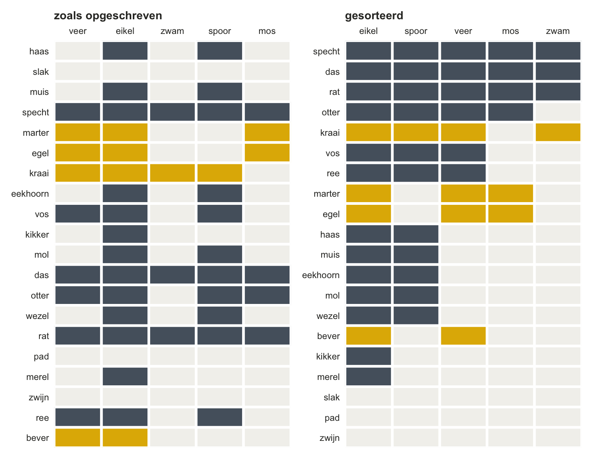
Figuur 1: Dezelfde twintig dieren en vijf items, twee keer. Links zoals de uil ze opschreef. Rechts gesorteerd: de items van makkelijk naar moeilijk, de dieren van veel goed naar weinig goed. Een gevuld vakje is een goed antwoord. Rechts loopt de rand tussen gevuld en leeg als een trap van linksonder naar rechtsboven. Bij vier dieren staan de gevulde vakjes niet aaneengesloten links; hun vakjes zijn okergeel in plaats van leigrijs: kraai, marter, egel en bever.
Links zie je een dambord. Rechts zie je een trap. Bovenaan staan de dieren met een hele rij gevuld, onderaan de dieren die alleen het makkelijkste item nog hebben, en daartussen schuift de grens één item per keer op.
De rij enen en nullen van één dier, met de items van makkelijk naar moeilijk, heet zijn scorepatroon. De vos heeft : de drie makkelijkste goed, de twee moeilijkste fout. Zo’n patroon — eerst enen, dan nullen, en nooit meer een één na een nul — noem ik hier een trappatroon: het is één tree van de trap in de figuur. In de literatuur heet het een Guttman-patroon; die naam kom je zo tegen. Het zegt: wie een moeilijker item goed heeft, heeft de makkelijkere ook goed.
Dat voelt logisch, en dat is het ook. “Het is natuurlijk wel gek als een moeilijk item opeens goed wordt gedaan en een makkelijk item opeens fout gaat.” Van de twintig dieren hebben er zestien zo’n net patroon. Vier niet:
Vier scorepatronen, en wat er gek aan is
dier
scorepatroon
wat er gek aan is
marter
spoor fout, maar veer en mos goed
egel
spoor fout, maar veer en mos goed
kraai
mos fout, maar zwam goed
bever
spoor fout, maar veer goed
Note. Het scorepatroon staat met de items van makkelijk naar moeilijk: eikel, spoor, veer, mos, zwam.
Dit zijn de rare patronen. Raar is hier geen oordeel over het dier: de kraai kan die zwam gewoon toevallig kennen. Het betekent alleen: dit past niet in de trap.
Kijk nog één keer naar die vier. Bij drie van de vier zit hetzelfde item ertussen: spoor. Onthoud dat. Het komt terug bij de curven, en dan blijkt het geen toeval.
OpmerkingHoeveel patronen kunnen er zijn?
Schrijf ze eens uit voor drie items, dat gaat nog met de hand: , , , , , , , . Acht stuks. Elk item heeft twee uitkomsten, dus bij items zijn er patronen: bij drie items , bij onze vijf .
Hoeveel daarvan zijn een trap? Bij drie items vier: , , en . In het algemeen : je kunt nul items goed hebben, of alleen het makkelijkste, of de twee makkelijkste, en zo door tot alles. Bij vijf items dus zes trappen op 32 mogelijke patronen.
En in de data? De twintig dieren laten samen negen verschillende patronen zien: alle zes de trappen, en drie andere. Van de 26 patronen die géén trap zijn, komen er dus maar drie voor. De trap is geen wet, maar hij trekt wel.
Doen alsof: stel dat je de vaardigheid kent
Dieren en items op één lat
Tot hier heb je alleen geteld en gesorteerd. Nu doen we iets wat in het echt niet kan: we doen alsof we weten hoe vaardig elk dier is, en hoe moeilijk elk item.
Dat mag hier, want deze twintig dieren zijn verzonnen: ik heb de data zelf gemaakt, en wie data maakt weet waarmee. In het bestand zat al die tijd nog een kolom, en die heb je tot nu toe met opzet niet te zien gekregen:
dier vaardigheid
2 slak -2.8
6 egel 0.5
9 vos 0.4
12 das 2.4
18 zwijn -0.2
Twee Griekse letters, en die houd je de rest van het hoofdstuk bij je:
θ (thèta) is de vaardigheid van een dier. Voluit , met de van subject: de vaardigheid van dier . De vos heeft .
β (bèta) is de moeilijkheid van een item; op je collegesheets de moeilijkheidsgraad. Voluit , met de van item.
Het getal is het midden: een dier met is gemiddeld vaardig, een item met gemiddeld moeilijk. Hoger is vaardiger, of moeilijker; een dier op zit ongeveer één standaarddeviatie boven het gemiddelde dier. Stel dat de vijf items deze moeilijkheden hebben:
Proportie goed en moeilijkheid per item
item
proportie goed
moeilijkheid β
eikel
.85
−1.50
spoor
.60
−0.75
veer
.50
0.00
mos
.30
0.75
zwam
.20
1.50
Leg de twee kolommen naast elkaar: het item met de hoogste proportie goed heeft de laagste β. Die β’s hoef je niet uit de proporties te kunnen uitrekenen. Dat doet R, in de tweede helft; hier krijg je ze cadeau.
Het bijzondere is dat dieren en items op dezelfde lat liggen. Dat klinkt vreemd — een dier en een vraag in dezelfde maat? — maar je doet het zelf de hele tijd. Dat is een typische vwo-toets, zeg je, en dat is een typische vwo-leerling. Dan leg je een toets en een leerling langs dezelfde lat en vergelijk je ze. Hier staat er alleen een getal op die lat in plaats van een schooltype.
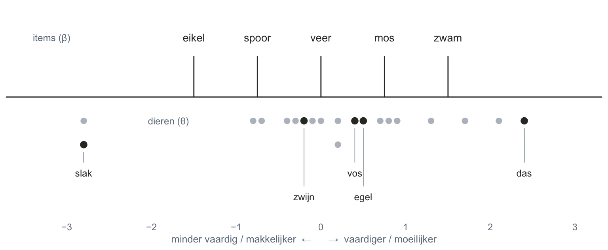
Figuur 2: Eén lat voor dieren en items. Boven de lijn de vijf items, elk op zijn moeilijkheid β. Onder de lijn de twintig dieren, elk op zijn vaardigheid θ; staan er twee dieren op dezelfde plek, dan staan ze onder elkaar. Vijf dieren hebben een donkere stip en dragen hun naam; de andere vijftien zijn lichtgrijs. De vos staat tussen veer en mos in.
De regel van Guttman
Liggen ze op één lat, dan kun je ze vergelijken, en dan ligt de simpelste voorspelling voor de hand. Hij is van Guttman:
Met het antwoord van dier op item : is goed, is fout. In woorden: is het dier vaardiger dan het item moeilijk is, dan doet hij het goed. Is hij minder vaardig, dan fout. Simpeler kan een voorspelling niet. (En staat een dier precies óp de moeilijkheid? Daar zeggen je collegesheets niets over. In dit hoofdstuk telt dat als goed.)
Op de lat zie je het zonder te rekenen. Zoek de vos op, bij . Alles wat links van hem ligt doet hij goed, alles wat rechts ligt fout. Links liggen eikel, spoor en veer — “hij is slimmer dan het item” — en rechts mos en zwam. De regel voorspelt .
En wat deed de vos? . Raak.
Doe het nu zelf voor de egel () en voor het zwijn (). Wat ze echt deden, lees je af in het gesorteerde paneel van de trapfiguur: de egel had , het zwijn .
De egel is bijna even vaardig als de vos, dus de regel voorspelt hetzelfde: . Mis. En het zwijn zou volgens de regel eikel en spoor goed moeten hebben, , en had alles fout.
Over alle twintig dieren klopt de regel van Guttman bij twaalf, en bij acht niet.
Bij die acht zitten de vier rare patronen. De andere vier — haas, eekhoorn, kikker en zwijn — hebben zelf een keurig trappatroon, alleen niet het patroon dat bij hun vaardigheid hoort. Een net patroon is dus nog niet het voorspelde patroon.
OpmerkingAlle twintig naast elkaar
Voorspeld en werkelijk patroon per dier
dier
θ
Guttman voorspelt
werkelijk
klopt?
das
2.4
11111
11111
ja
specht
2.1
11111
11111
ja
rat
1.7
11111
11111
ja
kraai
1.3
11110
11101
nee
otter
0.9
11110
11110
ja
marter
0.8
11110
10110
nee
ree
0.7
11100
11100
ja
egel
0.5
11100
10110
nee
vos
0.4
11100
11100
ja
haas
0.2
11100
11000
nee
eekhoorn
0.2
11100
11000
nee
bever
0.0
11100
10100
nee
wezel
−0.1
11000
11000
ja
zwijn
−0.2
11000
00000
nee
mol
−0.3
11000
11000
ja
kikker
−0.4
11000
10000
nee
muis
−0.7
11000
11000
ja
merel
−0.8
10000
10000
ja
slak
−2.8
00000
00000
ja
pad
−2.8
00000
00000
ja
Note. θ = vaardigheid. De patronen staan met de items van makkelijk naar moeilijk.
De regel van Guttman is deterministisch: hij bepaalt. Weet je θ en β, dan staat het antwoord vast, en twijfel bestaat niet. Dat is te streng voor dieren, en voor mensen. Wie onder de moeilijkheid van een vraag zit, kan hem toch goed hebben — per ongeluk, door een gok, door iets wat hij toevallig gisteren hoorde. En wie het hoort te weten, kan zich verschrijven.
Wat nu komt is daarom probabilistisch: kansmatig. Niet dit dier doet dit item goed, maar dit dier doet dit item waarschijnlijk goed.
Toch gooien we Guttman niet weg. Hij is het uiterste waar alles hierna naartoe wijst, en hij geeft je gevoel de goede richting.
TipWat een trappatroon je over θ vertelt
Draai de regel om. Als Guttman gelijk heeft en je ziet een patroon, dan weet je tussen welke twee items het dier op de lat staat:
Trappatroon en plek op de lat
patroon
dan ligt θ …
lager dan
van tot
van tot
van tot
van tot
of hoger
Kijk naar de bovenste en de onderste regel. Heeft een dier alles goed, dan weet je alleen dat het op de zit of erboven, en “dan weet je niet of die dus eigenlijk qua vaardigheid twee heeft, of dat die driehonderd heeft als vaardigheid.” Alles goed is leuk voor het dier en vervelend voor wie meet. Je leert het meest van een dier dat sommige items goed heeft en andere fout: dan weet je waar het staat.
OpmerkingTerzijde — bepaald of kansmatig
Dit kader hoef je voor je tentamen niet te kennen; de twee vetgedrukte woorden wel.
Stel dat je alles weet van vandaag: elk stofje, elke vlinder, elke wind. Kun je dan precies zeggen wat er morgen gebeurt? Zeg je ja, dan denk je deterministisch, zoals bij een biljartbal: wie de stoot kent, kent de baan. Zeg je nee — er blijft altijd iets wat je niet kunt vastpakken — dan denk je probabilistisch: kansmatig.
Dat is geen vraag voor filosofen alleen. Ga je studeren, dan geloof je kennelijk dat dingen een reden hebben die je kunt leren kennen; dat is een deterministische houding. En toch weet je dat geen mens zich precies laat voorspellen. Psychologie zit de hele tijd tussen die twee in. Bepaalt een depressie iemands gedrag, of noemen wij een stel gedragingen samen een depressie? Wie daar een aanname over doet, bouwt er een model op, gaat erin geloven, en kan er dan mee de mist in gaan.
Guttman is het deterministische model. Alles wat nu komt is probabilistisch.
Van zekerheid naar kans: de S-curve
Niet meer “goed” of “fout”, maar “waarschijnlijk goed”
Teken de regel van Guttman eens voor één item. Neem veer, met . Op de liggende as de vaardigheid, op de staande as het antwoord: of . Links van β ligt de lijn plat op nul, bij β springt hij omhoog, en rechts ligt hij plat op één. Een traptrede.
Maak die trede nu zacht. Ver onder β blijft de lijn laag, maar niet meer precies nul: er is altijd een kleine kans dat het toch goed gaat. Rond β klimt hij. En ver boven β kruipt hij tegen de één aan — “gaat tegen die 1 aan, maar zal het nooit echt worden” — want ook wie het weet, kan zich vergissen.
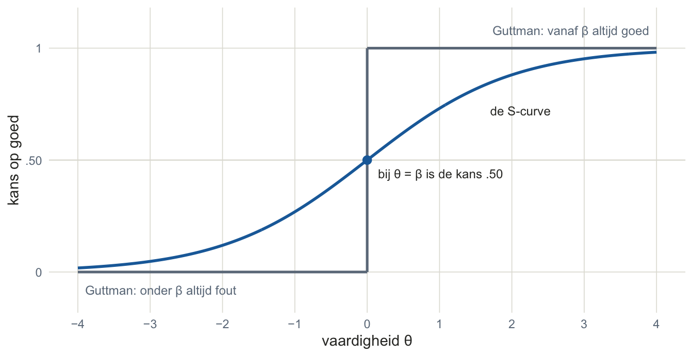
Figuur 3: Het item veer twee keer. De grijze lijn is de regel van Guttman: links van β ligt hij op 0, bij β springt hij in één keer naar 1. Die sprong ligt bij θ = 0, want veer heeft β = 0. De blauwe lijn is de S-curve: hij klimt geleidelijk, gaat bij θ = β precies door de hoogte .50, en raakt de 0 en de 1 nooit. Bij de grijze lijn lees je de staande as als het antwoord zelf, 0 of 1; bij de blauwe als een kans.
Dat is de hele stap van Guttman naar IRT. De hoogte van de lijn is vanaf nu geen antwoord meer, maar een kans. Zit de lijn bij jouw vaardigheid op , dan gaat het waarschijnlijk fout. Zit hij op , dan waarschijnlijk goed. En de grens leggen we waar je hem zelf ook zou leggen: bij . Vanaf daar zeg je goed.
Zo’n lijn heet een itemkarakteristieke curveitem characteristic curve, kortweg ICC. Elk item heeft er één. Kom je later logistische regressie tegen, dan zie je dezelfde lijn terug; het is hetzelfde gevoel.
De formule: een ding, en één plus dat ding
Om de curve te kunnen tekenen heb je een formule nodig, en dit is hem:
Links staat: de kans dat dier item goed heeft, gegeven de vaardigheid van het dier en de moeilijkheid van het item. De verticale streep lees je als gegeven dat. Op je collegesheets heet deze formule het Rasch-model; waarom hij daar ook als 1PL-model staat, zie je bij de drie tekeningen verderop.
Rechts lijkt het meer dan het is. Kijk naar de vorm: boven de streep staat een ding, en onder de streep staat één plus datzelfde ding. Dat ding is tot de macht vaardigheid min moeilijkheid. En is een vast getal, net als π: ongeveer , en het zit op je rekenmachine als de toets . Je hoeft dus alleen in te vullen.
Eén ding kun je meteen narekenen zonder rekenmachine. Is de vaardigheid precies gelijk aan de moeilijkheid, dan staat er , en dat is . Het ding is dan , en de kans . Dat is het punt in de figuur waar de blauwe lijn door de gaat. De bever staat daar: hij heeft , precies de moeilijkheid van veer.
Nu een dier dat er niet precies op staat: de vos () en het item mos (). In drie regels.
Op de meeste rekenmachines gaat de laatste regel met de antwoordtoets: typ het ding in, en daarna Ans ÷ (1 + Ans). Reken het ding met vier decimalen en rond je kans af op drie; dan kom je uit op wat hier staat.
En doe altijd even de check vooraf. De vos staat op de lat links van mos: zijn vaardigheid is lager dan de moeilijkheid. Dan móét de kans onder de uitkomen, nog voor je één toets hebt aangeraakt. Komt er iets boven de uit, dan heb je je verrekend.
Reken er nu zelf nog één uit, bijvoorbeeld eikel, en vergelijk. Let op het minteken: .
De kans van de vos op elk van de vijf items
item
β
θ − β
het ding
kans op goed
dus voorspel je
eikel
−1.50
1.90
6.6859
.870
goed
spoor
−0.75
1.15
3.1582
.760
goed
veer
0.00
0.40
1.4918
.599
goed
mos
0.75
−0.35
0.7047
.413
fout
zwam
1.50
−1.10
0.3329
.250
fout
Note. De vos heeft θ = 0.4.
Kijk naar de laatste kolom. Goed, goed, goed, fout, fout: het is precies het patroon dat Guttman voorspelde. Dat is geen toeval. Wie de grens bij legt, zegt goed zodra θ boven β ligt — en dat was de regel van Guttman. “Je ziet wel dat Guttman eigenlijk een beetje blijft leven hier.”
Het verschil zit in wat je erbij weet. Guttman zegt over veer: goed. De curve zegt: goed, met een kans van . Van elke honderd dieren die even vaardig zijn als de vos, doen er naar verwachting 60 de veer goed, en 40 niet. Je voorspelling is dezelfde gebleven; je weet nu alleen hoe vaak hij mis zal gaan.
TipAls ze om de kans op fóut vragen
De formule geeft de kans op een goed antwoord. De kans op fout is wat er overblijft: één min die kans. Voor de vos op mos is dat . Lees een vraag dus altijd even op dat ene woord.
Het hele patroon heeft ook een kans
Vijf items, vijf kansen. Wat is dan de kans op het hele patroon ?
Je vermenigvuldigt: de kans op goed bij de drie items die goed gingen, en de kans op fout bij de twee die fout gingen.
Dat vermenigvuldigen mag omdat het model aanneemt dat de vijf antwoorden van één dier, gegeven zijn vaardigheid, los van elkaar staan: wat de vos op eikel doet, verandert zijn kans op mos niet.
En nu het getal zelf. is voor de vos het meest waarschijnlijke patroon van alle 32. Dat vind je door bij elk item de waarschijnlijkste uitkomst te kiezen: goed waar de kans boven de ligt, fout waar hij eronder ligt.
En toch is de kans op dat patroon maar . Het meest waarschijnlijke is hier dus niet eens waarschijnlijk.
Tel je de kansen op alle zes de trappatronen bij elkaar op, dan kom je op : in ongeveer de helft van de gevallen maakt een dier als de vos een trappatroon, en in de andere helft iets anders. “Wat gaat er gebeuren? We don’t know. Maar we weten wel wat het meest waarschijnlijke is.”
Laat de vos de toets duizend keer maken
Dat kun je narekenen, maar je kunt het ook gewoon doen. Zet θ vast op , en laat R per item een muntje opgooien dat met de goede kans op goed valt. Dat doet rbinom(): rbinom(5, 1, P) geeft vijf keer een of een , elk met zijn eigen kans.
Deze code staat niet in je werkboek en je hoeft hem niet te kunnen schrijven. Lees wat eruit komt.
eikel spoor veer mos zwam
0.870 0.760 0.599 0.413 0.250
rbinom(5, 1, P_goed) # de vos maakt de toets één keer
[1] 1 0 1 0 1
# en nu duizend keer: elke rij is één keer de toetsantwoorden <-t(replicate(1000, rbinom(5, 1, P_goed)))patronen <-apply(antwoorden, 1, paste, collapse ="")head(sort(table(patronen), decreasing =TRUE), 8)
Kijk eerst naar die ene keer: . Meteen al geen trappatroon. Dat is geen fout in de code; zo gaat het als je met kansen werkt.
Dan de duizend keer. Dezelfde vos, dezelfde vijf items, en toch 30 verschillende patronen. komt het vaakst voor, 172 keer: dicht bij de die je net uitrekende. Bij elkaar zijn 508 van de duizend een trappatroon. En het patroon van de egel, , zit er ook tussen: 38 keer.
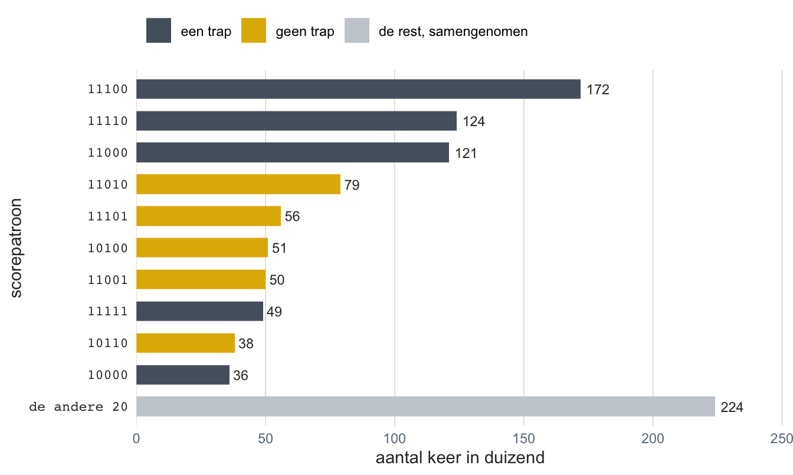
Figuur 4: Duizend keer de toets van een dier met θ = 0.4. Elke balk is één scorepatroon; de vijf cijfers staan voor eikel, spoor, veer, mos en zwam, in die volgorde. De lengte van een balk is het aantal keer dat het patroon voorkwam; het getal staat erachter. Getoond zijn de tien patronen die het vaakst voorkwamen; de andere 20 zijn samengenomen in de onderste, lichte balk, en alleen die verzamelbalk is langer dan de bovenste. Trappatronen zijn leigrijs, de andere okergeel. Het vaakst komt 11100 voor, het patroon dat de vos ook echt had. Het zesde trappatroon, 00000, kwam 6 keer voor en zit in de lichte balk.
Dit is waarom de egel geen fout van de uil is. Een dier dat precies even vaardig is als de vos, maakt zo’n patroon vanzelf af en toe. Niet vaak, wel soms.
Hoe vaak precies, hangt af van iets wat je nog niet gezien hebt: hoe steil de curven zijn. Tot hier waren ze allemaal even steil, zonder dat het erbij stond.
Hoe steil? De discriminatie α
Niet wáár de curve door .50 gaat, maar hóé
De curve had tot nu toe één knop: β, die bepaalt wáár hij omhoog gaat. Er is een tweede knop, en die bepaalt hoe steil hij omhoog gaat. Die heet α (alfa), de discriminatie van het item; op je collegesheets de discriminatieparameter:
Het is dezelfde formule, met één letter erbij: het verschil tussen vaardigheid en moeilijkheid wordt eerst met α vermenigvuldigd. In de vorige formule stond geen α. Dat is hetzelfde als een α van : keer één verandert niets.
WaarschuwingDit is een andere α dan die van thema 2
In thema 2 was α de betrouwbaarheid van een hele toets, Cronbach’s alfa: een getal tussen en . Hier is α de steilheid van de curve van één item, en die kan gerust of zijn. Twee dingen, één Griekse letter. In dit hoofdstuk betekent een kale α altijd de steilheid; waar de betrouwbaarheid bedoeld is, staat er Cronbach’s alfa voluit.
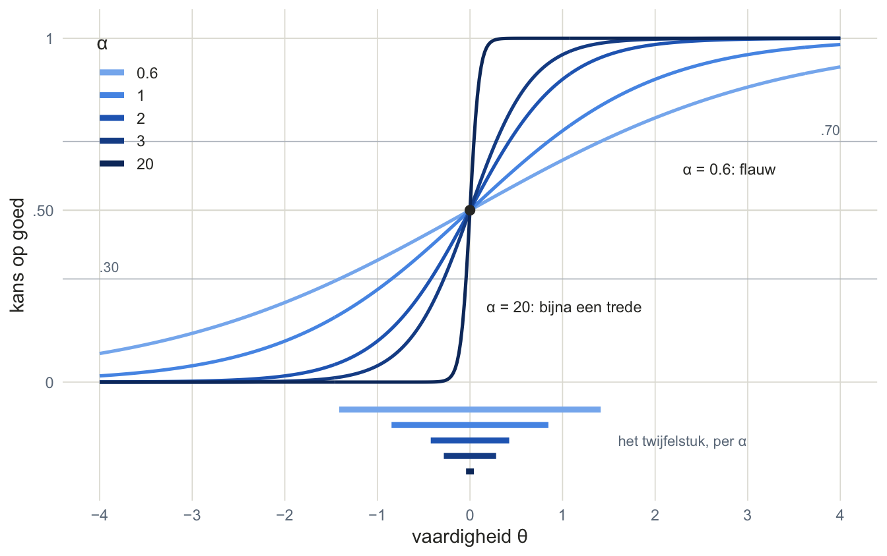
Figuur 5: Vijf keer het item veer, steeds met dezelfde moeilijkheid β = 0 en een andere α. Alle vijf de curven gaan door hetzelfde punt: bij θ = 0 is de kans .50. Hoe donkerder de lijn, hoe hoger α en hoe steiler de curve. Bij α = 0.6 loopt hij flauw; bij α = 20 is het bijna de traptrede van Guttman. Tussen de twee dunne liggende lijnen, op .30 en .70, twijfel je. De vijf balkjes onder de as laten zien over welk stuk van de lat dat bij elke α gaat: het lichtste, van α = 0.6, is het langst; het donkerste, van α = 20, is bijna een punt.
Let op waar je naar kijkt. Bij β keek je links-rechts: wáár gaat de curve door de hoogte ? Bij α kijk je naar de helling op diezelfde plek: niet wáár hij door de gaat, maar hóé. Dat zijn twee verschillende vragen aan hetzelfde plaatje, en op een tentamen worden ze door elkaar gesteld.
Waarom je een steile curve wilt
Stel dat de curve bij een bepaalde vaardigheid op zit, en dat er tweehonderd dieren precies daar staan. Wat voorspel je voor hen? Fout, want ligt onder de . Je zegt dus tweehonderd keer fout: 140 keer klopt je voorspelling, 60 keer zit je ernaast. Die 60 zijn de dieren die het met hun kans van tóch goed doen.
Staan ze waar de curve op zit, boven de , dan zeg je tweehonderd keer goed: 140 keer klopt je voorspelling, 60 keer zit je ernaast. Net zo vaak als bij , alleen zijn het nu de 60 die het fout doen.
Pas waar de curve op zit, gaat het lekker. Je zegt weer tweehonderd keer goed: 198 keer klopt je voorspelling, 2 keer zit je ernaast.
Voorspellen gaat dus goed waar de curve hoog of laag zit, en slecht in het stuk daartussenin. Een steile curve heeft een kort tussenstuk. Dat zijn de balkjes onder de as in de figuur: het stuk van de lat waar de kans tussen en ligt. In getallen:
Het twijfelstuk per steilheid
α
breedte, in θ
0.6
2.82
1
1.69
2
0.85
3
0.56
20
0.08
Note. α = steilheid. Het twijfelstuk is het tussenstuk uit de tekst.
Die tabel hoef je niet te kunnen maken; het gaat om de richting. (Wie hem toch wil narekenen: de kans is zodra gelijk is aan , dus het stuk is breed.)
Bij twijfel je over een stuk van bijna drie punten, op een lat die in de figuur acht punten lang is. Bij is het nog maar ruim een half punt. Zo’n item zegt van bijna elk dier duidelijk onder of boven. Dat is wat discrimineren hier betekent: onderscheid maken tussen wie minder en wie meer vaardig is. Hoe hoger α, hoe beter het item dat doet.
En bij is het twijfelstuk bijna weg. Dan heb je de trede van Guttman terug: kun je oneindig scherp onderscheiden, dan is het model weer deterministisch.
Je collegesheets stellen hier de vraag: waar is de meetfout gebleven? In de klassieke testtheorie stond hij als losse term in de formule: geobserveerde score is ware score plus meetfout. In IRT is hij er nog steeds, maar impliciet: omgekeerd evenredig met α. Het twijfelstuk is die meetfout in beeld. Leg in de tabel en naast elkaar: twee keer zo steil, half zo breed. En Guttman, met zijn oneindig steile trede, heeft helemaal geen meetfout.
Dat zie je ook aan de patronen. Hoe vaak maakt een dier met een trappatroon, als alle vijf de items dezelfde α hebben?
De vos onder drie steilheden
α van alle vijf de items
kans op een trappatroon
kans op
1
.50
.17
2
.76
.37
20
> .99
> .99
Note. is het patroon dat de vos echt had.
Bij de helft, bij driekwart, bij vrijwel altijd. De steilheid zegt hoe streng de trap is. De duizend keer van de vos hierboven waren dus de bovenste regel van deze tabel: de stand .
OpmerkingWat een item flauw of steil maakt
α gaat over de vraag of het item wel meet wat de toets meet. Neem een vragenlijst over angst. Ben je bang voor schoenveters? Wie daar ja op zegt, heeft daarmee nog geen angststoornis, en wie nee zegt evenmin; het antwoord hangt nauwelijks samen met hoe angstig iemand is. Een flauwe curve. Mijd je pleinen en drukke winkels? Dat hangt er wél mee samen: wie hoog zit op angst zegt bijna altijd ja, wie laag zit bijna altijd nee. Een steile curve.
Daarmee is α familie van iets wat je al kent. Hoe sterker een item aan het construct hangt, hoe hoger zijn α — en dat is precies wat een lading zei in thema 4 en 5.
Bij de uil is spoor het flauwe item. Een pootafdruk die half is weggeregend: ook een kenner zit er soms naast, en wie niets weet gokt soms goed.
Nog één rekenvoorbeeld, nu mét α. Dezelfde vos, hetzelfde item mos, maar stel dat mos een α van heeft. Er komt één handeling bij: het verschil eerst keer α.
Zonder α was het . De vos stond onder de moeilijkheid en staat daar nog steeds, dus de kans blijft onder de . α verandert nooit aan welke kánt van de je uitkomt. Wat hij wel doet: een α boven de duwt de kans verder van de af, een α onder de trekt hem ernaartoe. De kans van de vos op spoor was ; geef spoor een α van en hij zakt naar .
TipTwee parameters, of drie?
Tel de Griekse letters in de formule en je komt op drie: θ, β en α. Toch heet dit een model met twee parameters. Een parameter is een beschrijver. “Bij een broek heb je twee parameters: breedte en lengte.” Bij een curve ook twee: waar hij omhoog gaat (β) en hoe steil (α). Die twee beschrijven het item. De derde letter, θ, beschrijft geen curve maar een dier: het is de plek op de lat waar je de curve afleest.
Even steil of niet: Rasch/1PL en 2PL
Dezelfde vijf items, drie keer getekend
Hier gaat het elk jaar mis, dus eerst het hele verhaal in twee zinnen. Rasch en 1PL zijn hetzelfde model: elk item is even steil. Bij 2PL heeft elk item zijn eigen steilheid.
Kijk maar. Dit zijn de vijf items van de uil, drie keer. De moeilijkheden zijn in alle drie de tekeningen dezelfde; alleen de steilheid verschilt.
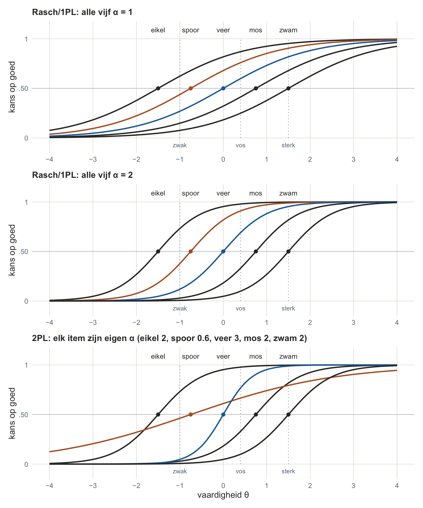
Figuur 6: De vijf items in drie tekeningen. In alle drie de panelen gaat elke curve op dezelfde plek door de hoogte .50, recht onder zijn naam: de moeilijkheden zijn gelijk. Boven: alle vijf even steil, met α = 1. Midden: weer alle vijf even steil, maar nu met α = 2. Die twee zijn hetzelfde model, Rasch/1PL, in twee standen; op de vaste lat van deze tekening zijn het echt twee steilheden, en waarom dat toch geen twee modellen zijn, staat in de tekst eronder. In die twee panelen lopen de curven naast elkaar zonder elkaar te snijden; in het middelste zie je ze tegen de 0 en de 1 aan niet meer los van elkaar. Onder: spoor (oranje) is flauw en veer (blauw) is steil, en daardoor snijdt de oranje curve alle vier de andere: eikel bij θ = −1.82, veer bij 0.19, mos bij 1.39 en zwam bij 2.46. De drie gestippelde staande lijnen zijn drie dieren: een zwak dier (θ = −1), de vos (0.4) en een sterk dier (1.5).
Rasch/1PL: elk item heeft dezelfde α. In het bovenste paneel is die gedeelde α , in het middelste . Waarom dat geen twee modellen zijn, komt zo.
2PL: elk item heeft zijn eigen α. In de tekening houden eikel, mos en zwam hun , wordt spoor flauw () en veer steil ().
PL staat voor parameter logistisch; logistisch is de naam van de S-vorm. Het cijfer ervoor telt hoeveel parameters er per item verschillen. Je collegesheets noemen dat itemkenmerken. Bij Rasch/1PL is dat er één, de moeilijkheid. De α is daar wel een getal, maar hij is voor alle items hetzelfde en zegt dus niets over wat één item anders maakt dan de rest. Bij 2PL verschillen er twee: β en α.
Even steil: de volgorde is voor iedereen dezelfde
Kijk naar de bovenste twee panelen. Vijf curven die netjes naast elkaar lopen. Ze zijn even steil, dus ze snijden elkaar nooit.
Dat heeft een gevolg waar je even bij stil moet staan. In elk paneel staan drie gestippelde lijnen: een zwak dier, de vos en een sterk dier. Lees langs zo’n lijn de vijf hoogtes af. eikel zit altijd het hoogst, dan spoor, dan veer, mos en zwam. Bij alle drie de dieren, en bij elk ander dier ook. Onder Rasch/1PL is de volgorde van makkelijk naar moeilijk voor iedereen dezelfde. Het ene dier heeft overal hogere kansen dan het andere, maar het zijn dezelfde items die bovenaan en onderaan staan.
En daarmee betekent een raar patroon ook echt iets. De egel had : spoor fout, en veer en mos goed. Hoe groot is de kans op precies dat patroon, voor een dier met zijn vaardigheid?
Het patroon van de egel bij twee steilheden
steilheid
kans op bij θ = 0.5
alle vijf α = 1
.039
alle vijf α = 2
.018
Met is dat . Dat past bij wat je in de duizend keer van de vos zag, die bijna even vaardig is: daar kwam dit patroon 38 keer voor. Zet je de vijf curven steiler, dan wordt de trap strenger en hetzelfde patroon rarer: bij nog . Dat is ruim vijftig keer zo’n toets maken om het één keer te zien.
Op deze lat is het verschil tussen het bovenste en het middelste paneel dus alleen hoe streng. Aan de volgorde verandert het niets.
Rasch en 1PL: één model, twee manieren om de lat vast te leggen
Twee panelen, twee steilheden: dat klinkt als twee modellen. Toch is het er één. Rasch en 1PL zijn hetzelfde model, alleen anders opgeschreven. Zo staat het op je collegesheets, en dat is ook het antwoord op je tentamen.
Het zit zo. In de tekeningen gaf ik je de lat cadeau, met elk dier en elk item er al op. Op een lat die zo vastligt, is echt strenger dan ; dat zag je net aan de egel. Maar in het echt heb je alleen enen en nullen, en moet R de lat zelf leggen. En een lat heeft geen vanzelfsprekende eenheid: niets in de antwoorden zegt hoe ver de streepjes uit elkaar moeten staan.
Kijk wat er gebeurt als je de streepjes anders zet. Neem de vos op mos, met : het getal in de macht is . Rek nu de hele lat twee keer zo ver uit, met alle dieren en alle items erop. Niemand verschuift; alleen de getallen worden twee keer zo groot. De vos staat dan op en mos op . Zet α op : . Hetzelfde getal, dus dezelfde kans, voor elk dier en elk item. Uit enen en nullen haal je die twee tekeningen dus niet uit elkaar.
Daarom moet je één ding vastzetten voordat R iets kan schatten. Je collegesheets noemen dat de schaal van θ identificeren, en geven er twee manieren voor:
je zet vast
dan schat R
zo heet die manier
de variantie van θ: hoe ver de dieren uit elkaar staan
Rasch, zoals in je handboek
de variantie van θ op
de ene gedeelde α
1PL, zoals in ltm en je werkboek
Twee parametriseringen van één model: dezelfde kansen, en dus passen ze precies even goed bij de antwoorden; alleen de getallen zijn anders. Wat 1PL als steilheid opschrijft, schrijft Rasch op als spreiding van de dieren.
Omrekenen gaat in twee stappen. Heeft 1PL een gedeelde α, dan krijgt θ op de lat van Rasch een standaarddeviatie van precies die α, en dus een variantie van . En elke β wordt α keer zo groot. Bij de vos en mos was α : alles op de lat werd twee keer zo groot. In de tweede helft van dit hoofdstuk staat het in getallen, in een kader bij het vergelijken van de modellen.
Je collegesheets zetten er nog iets bij: vergelijkbaar met identificatie in CFA. In thema 5 kreeg een factor ook op twee manieren een eenheid: je zette één lading op (de marker), of je zette de variantie van de factor op (std.lv = TRUE). Rasch is de marker-manier, 1PL de std.lv-manier. Bij Rasch staan wel alle α’s op en niet één, maar omdat ze toch aan elkaar gelijk moeten zijn, zet je met die ene ook alle andere vast.
Niet even steil: de curven kruisen
Nu het onderste paneel. spoor is flauw geworden. Zijn curve begint links hoger dan je zou verwachten en komt rechts maar langzaam omhoog. En daardoor snijdt hij de andere, alle vier.
Volg de oranje lijn van links naar rechts, en tel op welke plek spoor staat.
Helemaal links ligt hij bovenaan: voor de slak en de pad () is spoor het makkelijkste item, makkelijker nog dan eikel ( tegen ).
Bij het zwakke dier van de eerste stippellijn staat hij tweede, zoals zijn β zegt.
Bij kruist de steile blauwe curve van veer hem: derde.
Bij doet mos dat ook: vierde.
En voorbij ligt hij onderaan: voor een dier dat daar staat is spoor het moeilijkste item van de vijf. Van de twintig staat er geen zo ver; de das komt met het dichtst in de buurt.
Voor de drie dieren van de stippellijnen staan de kansen hier. De items staan per rij van makkelijk naar moeilijk voor dat dier:
Kans op goed per item onder 2PL
dier
van makkelijk naar moeilijk, met de kans op goed
zwak,
eikel · spoor · veer · mos · zwam
de vos,
eikel · veer · spoor · mos · zwam
sterk,
eikel · veer · mos · spoor · zwam
Zoek spoor in elke rij. Tweede, derde, vierde. “Dus dat kan omdraaien. Dus dat is best raar eigenlijk.” De moeilijkheid β is nog steeds de plek waar de curve door gaat. Maar de vraag welk item is moeilijker? heeft onder 2PL geen antwoord meer dat voor iedereen geldt. Het hangt ervan af aan wie je het vraagt.
En nu de egel nog een keer. Onder gelijke steilheid was de kans op zijn patroon of . Met deze vijf verschillende α’s is het : ruim vier keer zo groot als met voor elk item.
Voor de egel is spoor namelijk helemaal niet zo makkelijk. Zijn kans erop is , lager dan zijn kans op veer (). spoor missen en veer goed hebben is voor hem geen stunt.
Een raar patroon is onder 2PL dus niet meer per se raar. Daar was je iets beloofd: bij drie van de vier rare patronen in de proeftoets zat spoor ertussen. Dat is het flauwe item. Wie met de volgorde van de p-waarden naar die patronen kijkt, ziet drie vreemde dieren. Wie naar de curven kijkt, ziet één flauw item.
Wil je dat kruisen niet hebben? Dan zet je alle α’s gelijk — en dan ben je terug bij Rasch/1PL. Dat is waar dat model voor dient: het koopt een volgorde die voor iedereen geldt, en betaalt ervoor met de aanname dat alle items even scherp onderscheiden.
BelangrijkRasch/1PL, 2PL en “constante α” in één tabel
Guttman
Rasch/1PL
2PL
soort model
deterministisch
probabilistisch
probabilistisch
de steilheid α
geen: een trede
constant: voor elk item gelijk
niet constant: per item een eigen waarde
wat tussen items verschilt
β
β
β en α
de curven
treden
naast elkaar
kunnen kruisen
volgorde makkelijk → moeilijk
voor iedereen gelijk
voor iedereen gelijk
hangt af van θ
mogelijke scorepatronen bij items
(bij vijf: 6)
(bij vijf: 32)
wat R moet schatten bij items
—
(bij vijf: 6): de β’s, plus de variantie van θ (Rasch) óf de gedeelde α (1PL)
(bij vijf: 10)
Drie zinnen om naast die tabel te leggen.
“Constante α” betekent: dezelfde α voor elk item. Of je die ene α dan op zet en de variantie van θ laat schatten (Rasch), of de variantie op zet en de α laat schatten (1PL), is een keuze van de lat en geen ander model.
Rasch/1PL schat getallen, en heet toch één-parameter. De naam telt wat per item verschilt, en dat is alleen β. Het getal erbij — de variantie van θ of de gedeelde α — beschrijft geen item.
Voor je tentamen is dit de hele kwestie: Rasch en 1PL zijn hetzelfde model met een andere parametrisering, want bij allebei is α voor elk item gelijk. Bij 2PL heeft elk item zijn eigen α.
Kom je in ander materiaal Rasch en 1PL tegen als twee verschillende modellen, vertaal dat dan naar deze tabel: het is één model, op twee manieren opgeschreven.
Op je collegesheets staan deze modellen in één rijtje, met er twee achteraan die je hier niet uitrekent: Guttman, Rasch/1PL, 2PL, het drie-parametermodel (3PL, dat corrigeert voor gokken) en het graded-responsemodel (voor items met meer dan twee antwoordcategorieën). Wat ze delen: ze veronderstellen allemaal een latente trek, en ze verklaren een itemrespons uit eigenschappen van de persoon en van het item. Waarin ze verschillen: hoe ingewikkeld ze zijn — hoeveel parameters, en welke.
Hoeveel weet je na één antwoord? Informatie
Een item meet het scherpst op zijn eigen niveau
Vraag ik je hoeveel één plus één is, dan weet je het. Iedereen weet het. Dus na afloop weet ik over niemand iets wat ik nog niet wist. Het item levert geen informatie. Niet omdat het een slecht item is, maar omdat het voor iedereen te makkelijk is.
Wanneer levert een item wél informatie over een dier? Als het spannend is. Als het net wel, net niet goed kan gaan. “Zet een leerling op zijn juiste plek.” Zet je een vwo-leerling op een vmbo-school, dan doet hij alles goed, en dat zegt je niets over waar hij staat.
Hoeveel informatie een item levert bij een vaardigheid θ, reken je zo uit:
Met de kans op goed die je al kunt uitrekenen. Lees de formule als twee vragen achter elkaar:
Hoe spannend is het? Dat is : de kans op goed keer de kans op fout. Is het bijna zeker goed of bijna zeker fout, dan is een van de twee bijna nul en het product ook.
Hoe scherp onderscheidt het item? Dat is . Een steil item haalt uit dezelfde spanning meer.
Je collegesheets zeggen er nog iets bij: iteminformatie is de afgeleide van de itemresponsfunctie. De itemresponsfunctie is de formule achter de curve, en de afgeleide zegt hoe steil die curve op een bepaalde plek loopt. Letterlijk klopt dat bij : dan is de helling van de curve precies , en dat is de informatie. Bij een andere α is de helling , en komt er voor de informatie nog een α bij. Waarom die tweede α erbij komt, volgt uit wiskunde die buiten dit vak valt; dat mag je aannemen.
Het getal dat eruit komt heeft geen eenheid die je ergens van kent. Je gebruikt het om te vergelijken: hoe hoger, hoe nauwkeuriger je na dit antwoord weet waar het dier staat. Veel informatie, kleine meetfout.
Rekenen doe je in twee keer: eerst de kans, dan de informatie. Neem de vos en het item veer, met de α uit het onderste paneel van de figuur met de drie tekeningen: en .
En eikel, met en ? De vos heeft die vrijwel zeker goed: . Dan is de informatie . Bijna niets. Dat de vos weet van welke boom een eikel valt, wist je al.
Waar de informatie het grootst is
Het stuk is het grootst als : een half keer een half is een kwart, en elke andere verdeling geeft minder. En is precies waar θ gelijk is aan β. Dus:
Een item meet het scherpst bij de dieren die even vaardig zijn als het item moeilijk is. De informatie is daar : bij is dat , bij precies , bij al . Dat kwadraat doet veel. Een item dat twee keer zo steil is, levert op zijn beste plek vier keer zoveel informatie — maar wel op een smaller stuk van de lat.
Teken je de informatie van een item voor elke θ, dan krijg je een berg, met de top boven zijn β:
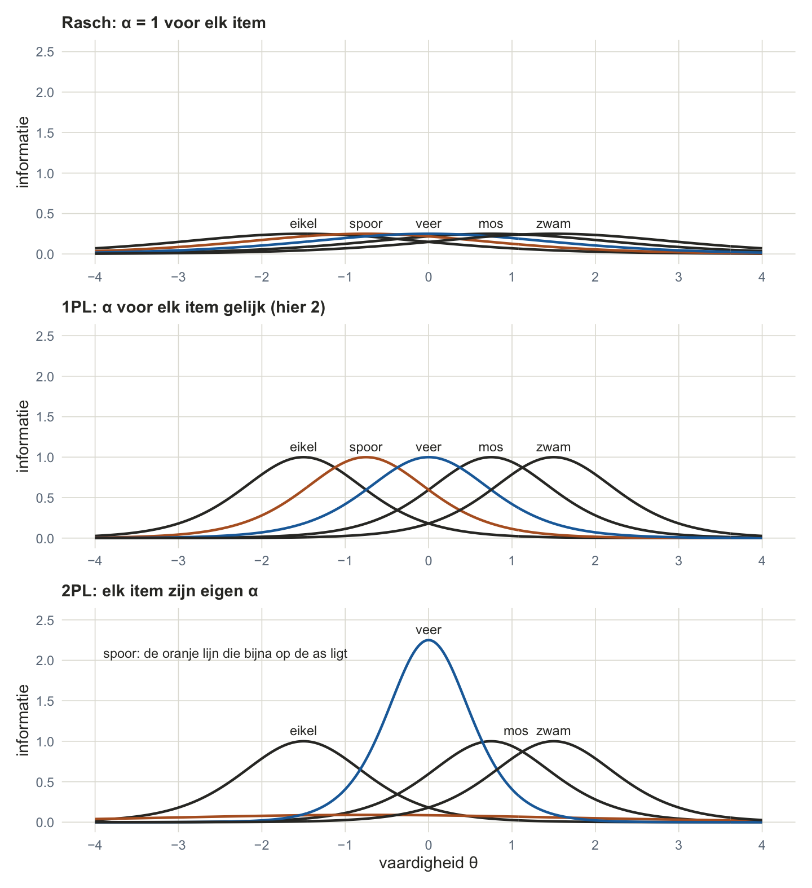
Figuur 7: De informatie per item, in dezelfde drie tekeningen en op dezelfde schaal. Elke berg heeft zijn top recht boven de moeilijkheid van het item, en zijn naam staat erboven; alleen in het onderste paneel is de naam van mos iets naar rechts geschoven, weg van de flank van veer. Boven (α = 1) zijn het vijf lage, brede heuvels van 0.25 hoog. Midden (α = 2) vijf even hoge bergen van precies 1 hoog, smaller. Onder is de berg van veer (blauw) met 2.25 de hoogste en de smalste. Die van spoor (oranje) is 0.09 hoog en ligt bijna op de as, onder de flanken van zijn buren; daarom staat zijn naam niet bij zijn top maar in de hoek linksboven.
Lees de drie panelen net als die van de curven. Bij Rasch/1PL zijn alle bergen even hoog, want alle α’s zijn gelijk; ze staan alleen op een andere plek. Bij 2PL verschillen ze in hoogte. veer steekt er hoog bovenuit, maar alleen tussen en ; daarbuiten vertelt een ander item meer. En spoor is bijna plat: een flauw item levert voor niemand veel op.
De hele toets: tel de bergen op
Voor de toets als geheel tel je bij elke vaardigheid de informatie van de items bij elkaar op. Dat is de testinformatie:
met de som over alle items van de toets.
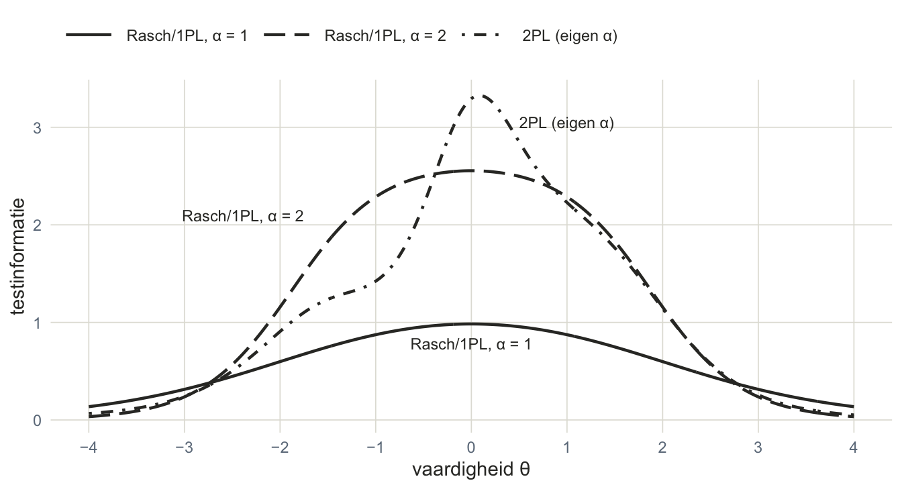
Figuur 8: De testinformatie van de vijf items samen, in de drie tekeningen van de vorige twee figuren: Rasch/1PL met α = 1 (het bovenste paneel) is de doorgetrokken lijn, Rasch/1PL met α = 2 (het middelste) die van lange strepen, 2PL (het onderste) de streep-stippellijn. Alle drie hebben hun top rond θ = 0 en lopen naar beide kanten af. De lijn van 2PL heeft de hoogste en spitste top (3.33), en is rond het midden, tussen θ = −0.38 en 0.86, de hoogste van de drie. Links daarvan zakt hij duidelijk onder de lijn met α = 2; rechts vallen die twee lijnen bijna samen. De lijn met α = 1 is in het midden de laagste (top 0.98) en de breedste: voorbij θ = −2.73 en 2.78 ligt hij zelfs bovenop, want flauwe curven smeren hun beetje informatie het verst uit.
Voor wie meet de proeftoets van de uil dus het best? Voor dieren rond het midden: de top ligt in alle drie de tekeningen bij een θ van ongeveer . Ver daarvandaan weet de toets bijna niets. De slak en de pad staan op , de das op . Alles fout, alles goed — en je weet nu waarom je daar weinig aan hebt: er lag geen enkel item bij hen in de buurt.
Eén ding in de figuur lijkt verkeerd om. Links van het midden ligt de lijn van 2PL onder die van Rasch/1PL met : bij is het tegen . Dat ligt niet aan het model maar aan spoor. In het middelste paneel van de bergen kreeg hij dezelfde α als de rest, , en daarmee een hoge berg op . In de tekening van 2PL is hij flauw, en is die berg bijna weg. Een toets is zo scherp als zijn items, en één flauw item laat een deuk achter op de plek waar het had moeten meten.
OpmerkingInformatie tegenover betrouwbaarheid
In thema 2 had een toets één betrouwbaarheid. Die hing af van de spreiding in de groep: twee dieren die bijna even vaardig zijn, haal je moeilijk uit elkaar, dus in een groep die op elkaar lijkt is de betrouwbaarheid laag. Maar hij hing niet af van hoe hóóg de groep scoorde, en hij was voor elk dier in die groep hetzelfde getal.
Informatie draait dat om. Die hoort niet bij een groep maar bij een plek op de lat. Dezelfde toets meet het ene dier scherp en het andere nauwelijks, en dat staat in één plaatje. Je collegesheets zeggen het kort: testinformatie is in IRT het equivalent van betrouwbaarheid in de KTT, alleen hangt hij af van waar je op de lat staat. Hoe precies de geschatte θ van één dier is, verschilt dus per dier; dat zie je terug bij de vos en de egel, aan het eind van de R-helft.
Houd bij elke figuur twee richtingen uit elkaar: links-rechts is waar op de lat, hoog-laag is hoeveel — kans bij de curven, informatie bij de bergen.
Nu echt: schatten uit data
Driehonderd dieren, tien items, en niemand die iets weet
“Tot zover hadden we dus gedaan alsof bekend was hoe moeilijk een item is. Nou, dat is natuurlijk onzin.” In het echt heb je alleen de bast: enen en nullen. Geen θ, geen β, geen α. Die moet je uit de antwoorden halen, en dat heet schatten.
Hoe dat gaat, heb je in het klein al gedaan. Je rekende uit hoe groot de kans op een scorepatroon was als je β en α kende. R draait dat om. Het probeert getallen voor β en α, rekent uit hoe waarschijnlijk de antwoorden die er echt liggen dan zouden zijn, en schuift aan die getallen tot het niet waarschijnlijker meer kan. Die waarschijnlijkheid heet de likelihood. Het is een onhandig klein getal — honderden kansen met elkaar vermenigvuldigd — en daarom drukt R de logaritme ervan af: de log-likelihood, in de uitvoer log.Lik. Die is altijd negatief, en hoe dichter bij nul, hoe beter het model bij de antwoorden past. Meer hoef je er niet van te weten om de uitvoer te lezen.
En de dieren? R kent hun θ niet, en schat die hier ook nog niet. Het neemt aan dat de vaardigheden normaal verdeeld zijn, met gemiddelde en standaarddeviatie — variantie dus, de 1PL-manier om de lat vast te leggen — en rekent met die hele verdeling. De θ van één dier komt pas daarna; die zie je aan het eind.
De uil heeft zijn toets uitgebreid. Tien vragen nu — de vijf die je kent en vijf nieuwe — afgenomen bij driehonderd dieren: de Bos-Kennistoets. Voor twintig dieren kon je nog tellen en sorteren met de hand. Voor driehonderd heb je R nodig.
Je werkboek geeft daar vier stappen voor, en die vier lopen we hier langs:
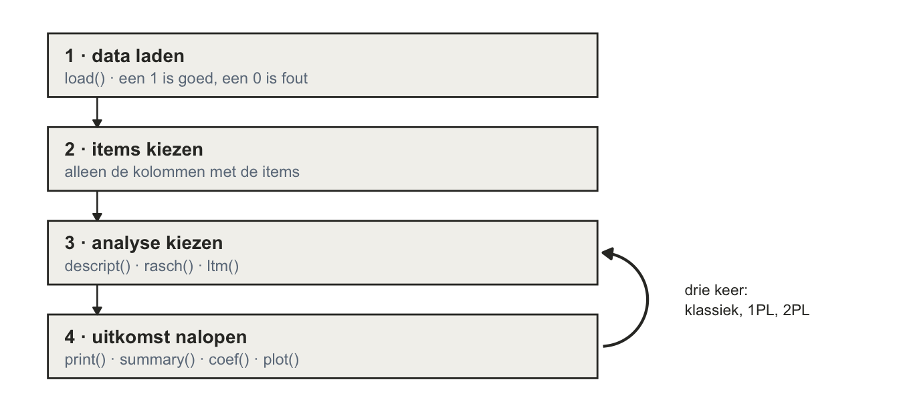
Figuur 9: De vier stappen voor IRT in R, zoals je werkboek ze geeft, met erbij wat je in dit hoofdstuk op die plek doet. Rechts buigt een pijl van stap 4 terug naar stap 3: die twee loop je drie keer. Eerst de klassieke analyse met descript(), dan het 1PL-model met rasch(), dan het 2PL-model met ltm().
Stap 1 en 2 — laden, en de items kiezen
Het pakket heet ltm, hetzelfde als in je werkboek. Met str() kijk je wat er in het bestand zit: hoeveel rijen, en welke kolommen.
Driehonderd rijen, elf kolommen. De eerste kolom is een naamkaartje, geen item. De functies van ltm willen een tabel met alleen items erin, dus die kolom moet eraf. Dat kan op twee manieren; kies er één.
Schrijf hier dplyr::select() voluit. ltm laadt het pakket MASS mee, en MASS heeft ook een functie die select() heet. Zonder dat voorvoegsel pakt R de verkeerde, en krijg je een foutmelding die nergens over lijkt te gaan.
Eerste ronde — klassiek, met descript()
Voordat je een curve schat, doe je wat je in de eerste helft met potlood deed: tellen. De functie descript() doet dat voor je, en hij geeft een lange lap uitvoer. Je hebt er drie stukken van nodig. Zoek die drie op en laat de rest liggen:
Proportions, kolom 1: de proportie goed per item. Dat is de p-waarde uit het begin van dit hoofdstuk, nu voor driehonderd dieren. De kolom logit ernaast laat je liggen.
Point Biserial correlation, kolom Excluded: hoe sterk het item samenhangt met de somscore van de andere negen items. Dat is de item-restcorrelatie: de klassieke maat voor hoe goed een item onderscheidt. In thema 2 las je hem af als r.drop.
Cronbach’s alpha: bovenaan Cronbach’s alfa van de hele toets, en daaronder wat hij zou zijn als je dat ene item weglaat.
Wat je mocht overslaan: Frequencies of total scores telt hoe vaak elke somscore voorkomt, en het laatste blok, Pairwise Associations, toetst per tweetal items of ze samenhangen. De kolom p.value daar is de p-waarde van een toets, niet die van een item. R benadert hem met toevalstrekkingen, dus hij valt bij jou net iets anders uit dan hier.
Wat lees je uit de drie stukken?
Het makkelijkste item is eikel (), het moeilijkste zwam (). Dat wist je al van de proeftoets, en het is prettig dat driehonderd dieren het bevestigen.
Cronbach’s alfa is . Bij negen van de tien items daalt hij als je het item weglaat: die dragen bij. Bij één item stijgt hij, naar : spoor. Hetzelfde item heeft ook de laagste item-restcorrelatie, , waar veer op zit. Daar is hij weer.
En dan een vraag waar de klassieke testtheorie geen getal voor heeft: is de volgorde van moeilijkheid voor elk dier dezelfde? Daar is de plot voor. Op de liggende as de somscore — een ruwe maat voor vaardigheid — en op de staande as de proportie goed per item, apart voor de dieren met die somscore.
De plots van ltm hebben Engelse assen, en zo krijg jij ze ook op je scherm. Hier is Total Score de somscore en Proportion Correct de proportie goed. Bij de curven verderop is Ability de vaardigheid θ, Probability de kans op goed en Information de informatie.
Van de code hieronder heb je alleen de regel met plot(ctt, ...) nodig. De regels eromheen geven twee items een kleur en zetten er een legenda bij.
# twee items een eigen kleur, de rest grijs: zo zie je waar je naar kijktkleur <-rep("grey55", ncol(kennis))kleur[colnames(kennis) =="spoor"] <-"#b56028"kleur[colnames(kennis) =="veer"] <-"#1b6ca8"plot(ctt, type ="b", lty =1, pch =1:10, col = kleur, includeFirstLast =TRUE)legend("bottomright", legend =colnames(kennis), col = kleur, pch =1:10, lty =1,bty ="n", cex =0.8, ncol =2)
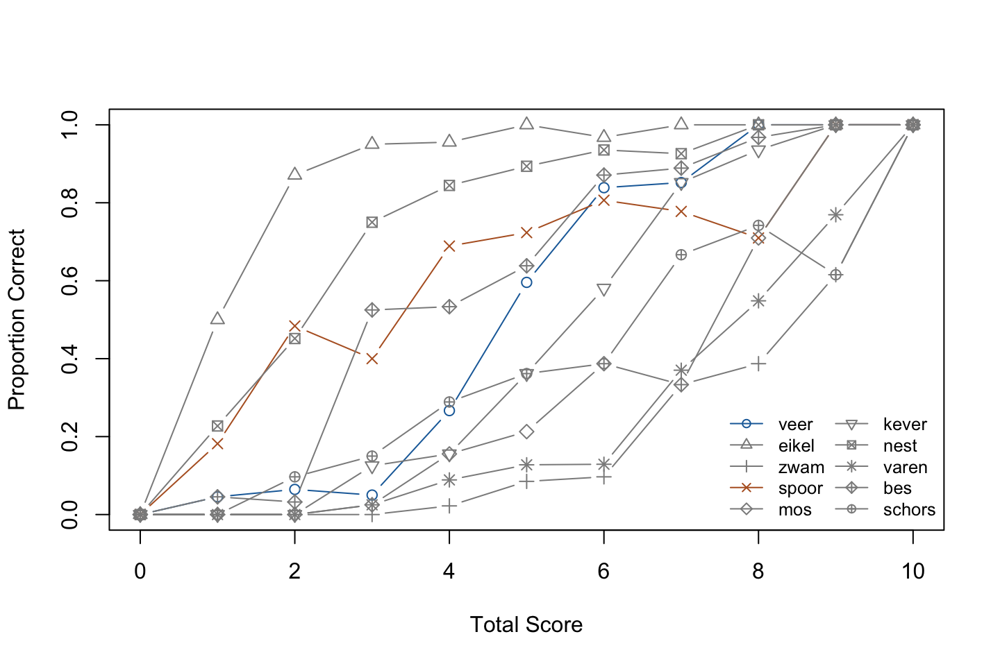
Figuur 10: De proportie goed per item, uitgesplitst naar somscore. Elke lijn is één item, met een eigen teken; spoor is oranje, veer blauw, de andere acht grijs. Alle lijnen beginnen op 0 en eindigen op 1: wie niets goed heeft, heeft elk item fout, en wie alles goed heeft elk item goed. Daartussen lopen de grijze lijnen grofweg naast elkaar omhoog. De oranje lijn ligt bij somscore 2 op de tweede plek van boven, stijgt daarna maar langzaam, en deelt bij somscore 8 de zevende plek met mos. De blauwe ligt tot en met somscore 3 vlak boven de bodem en schiet daarna omhoog.
Lopen de lijnen netjes boven elkaar, dan is de volgorde op elk niveau gelijk. Hier doen ze dat niet. Van de 45 paren items wisselen er 13 ergens tussen somscore en van plaats. Voor een deel is dat ruis: bij somscore staan maar 22 dieren. Maar kijk naar de oranje lijn. Die ligt links boven de meeste andere en rechts eronder. Dat is geen ruis; dat is een curve die flauwer loopt dan de rest.
De klassieke testtheorie kan dat zien, maar niet opschrijven: ze heeft per item één proportie, voor iedereen tegelijk. Daar heb je een curve voor nodig.
Tweede ronde — het 1PL-model, met rasch()
WaarschuwingDe functie heet rasch(), en hij doet 1PL
Zonder verdere aanwijzing zet rasch() de variantie van θ op en schat hij één gedeelde α. Dat is de 1PL-manier van opschrijven, en je werkboek zegt het ook zo: voor het 1PL-model gebruik je de functie rasch(). Het Rasch-model van je handboek is hetzelfde model op een andere lat; daar hoef je in R dus niets apart voor te doen.
Kom je ergens rasch() tegen met een constraint die α op vastzet: dan blijft de variantie van θ óók op staan. Dat is geen van de twee manieren van je collegesheets, maar een strenger model. Gebruik het niet als “het Rasch-model”.
De uitvoer van summary() heeft vier blokken. Je leest er twee:
Model Summary: log.Lik is de log-likelihood van daarnet. AIC en BIC komen terug bij het vergelijken van de modellen.
Coefficients: de schattingen. De kolom value is het getal zelf, std.err de standaardfout ervan. De kolom z.vals laat je liggen.
De blokken Integration en Optimization gaan over hoe R gerekend heeft. Het enige wat je daar naloopt is Convergence: 0. Die nul is goed nieuws: het zoeken is netjes tot stilstand gekomen.
Onder Coefficients staan twee soorten regels. Dffclt. staat voor difficulty: de moeilijkheid β van dat item. Dscrmn is discrimination: de α. En daar staat er maar één van, helemaal onderaan, mét een standaardfout erachter. Iets wat een standaardfout heeft, is geschat. De data hebben die α gekozen, en hij is geen maar .
Vraag je coef() om dezelfde getallen, dan staat de α bij elk item, en overal dezelfde:
Moeilijkst en makkelijkst.zwam heeft de hoogste β (), eikel de laagste (). Dezelfde twee als in de klassieke analyse. Dat hoort ook: in een model met één gedeelde α volgt de volgorde van de β’s rechtstreeks uit hoeveel dieren het item goed hadden.
Wat zegt Dffclt.eikel? Een dier met heeft precies kans om eikel goed te hebben. In ltm staat θ op gemiddelde en standaarddeviatie , dus dat is een dier ruim twee standaarddeviaties onder het gemiddelde. Een heel makkelijk item.
Wat zegt Dscrmn? De steilheid, voor alle tien de items gelijk. Welk item béter onderscheidt, kan dit model je dus niet vertellen; die vraag heeft het weggeorganiseerd.
De drie plots die bij elk IRT-model horen komen nu. Let op de namen: type = "ICC" en type = "IIC" schelen één letter. ICC zijn de S-curven (de C van characteristic), IIC zijn de bergen (de I van information). Zet je er items = 0 bij, dan tekent R niet de losse bergen maar hun som: de testinformatie.
plot(fit_1pl, type ="ICC", col = kleur, lwd =2, legend =TRUE, cx ="bottomright", cex =0.75)
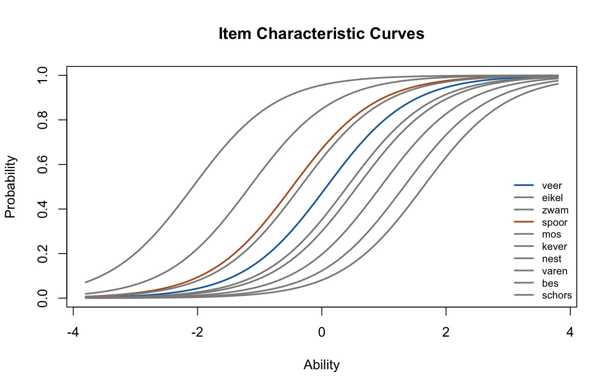
Figuur 11: De itemkarakteristieke curven van het 1PL-model: tien S-curven die allemaal even steil zijn en alleen naar links of rechts verschoven liggen. Ze snijden elkaar nergens. Van links naar rechts, afgelezen halverwege de staande as, bij een kans van .50: eikel, nest, spoor, bes, veer, kever, schors, mos, varen, zwam. De oranje curve is spoor, de blauwe veer; in de legenda zijn de andere acht alle grijs.
plot(fit_1pl, type ="IIC", col = kleur, lwd =2, legend =TRUE, cx ="topright", cex =0.75)
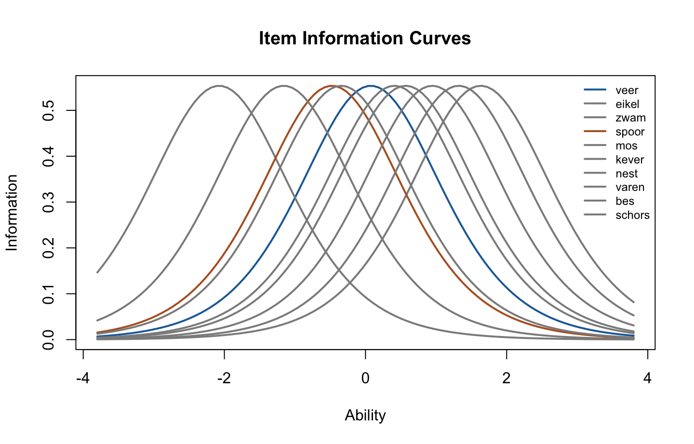
Figuur 12: De informatie per item onder het 1PL-model: tien bergen van precies dezelfde hoogte (0.55) en breedte, elk met zijn top boven de moeilijkheid van zijn eigen item. Ze staan in dezelfde volgorde als de curven in de vorige figuur.
plot(fit_1pl, type ="IIC", items =0, lwd =2)
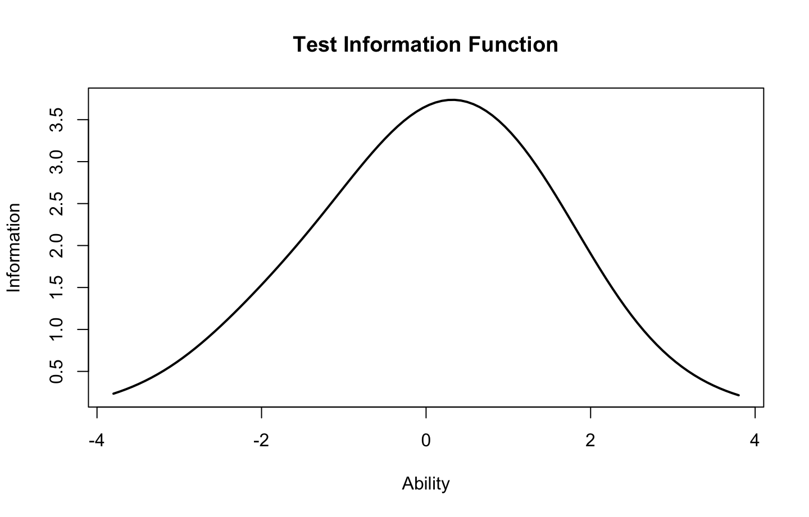
Figuur 13: De testinformatie onder het 1PL-model: de tien bergen bij elkaar opgeteld tot één brede berg, met de top (3.74) rond θ = 0.3.
Je kent ze alle drie al uit de eerste helft; dit zijn dezelfde tekeningen, maar nu met getallen die uit de data komen.
ICCitem characteristic curves: tien curven, even steil, alleen verschoven. Waar een curve door gaat, lees je zijn β af.
IICitem information curves: tien bergen, even hoog, want α is voor allemaal gelijk. Die hoogte is . Ze staan alleen op een andere plek.
Testinformatie: de tien bergen opgeteld. De top ligt bij . Daar meet deze toets het scherpst; voor heel zwakke en heel sterke dieren weet hij weinig.
Derde ronde — het 2PL-model, met ltm()
Zelfde data, andere functie. De z1 in ltm(kennis ~ z1) is de naam die ltm geeft aan de ene latente variabele — latent: niet rechtstreeks te zien — en dat is hier de vaardigheid θ. Kijk in de uitvoer naar de kolom Dscrmn: staat daar nog steeds tien keer hetzelfde getal?
Beste en slechtste discriminatie.veer is het steilst (), spoor het flauwst (). Dezelfde twee die de klassieke analyse aanwees met de item-restcorrelatie.
Moeilijkst en makkelijkst. Wordt er naar het moeilijkste item gevraagd, dan kijk je ook onder 2PL naar de hoogste β: de plek waar de curve door gaat. Dat zijn nog steeds zwam en eikel. Dat de volgorde per dier kan omdraaien blijft waar; β zegt waar de curve door gaat, niet wie het item makkelijk vindt. De getallen zijn wel verschoven, het meest bij spoor: van onder 1PL naar nu. Onder 1PL moest zijn flauwe curve in een steile mal; nu hij zijn eigen steilheid mag hebben, komt de plek waar hij door gaat ergens anders te liggen.
Dan dezelfde drie plots. Kijk bij elke plot eerst naar de staande as: R kiest die per plot opnieuw, dus een berg die even groot oogt als bij het 1PL-model kan drie keer zo hoog zijn.
plot(fit_2pl, type ="ICC", col = kleur, lwd =2, legend =TRUE, cx ="bottomright", cex =0.75)
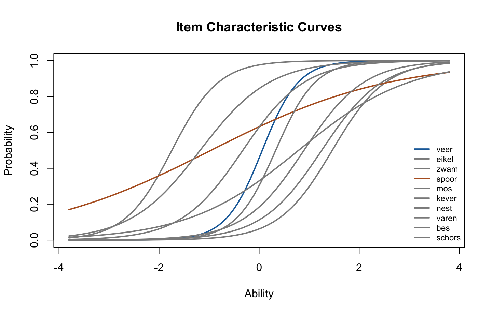
Figuur 14: De itemkarakteristieke curven van het 2PL-model: tien S-curven met elk een eigen steilheid. Van links naar rechts, afgelezen halverwege de staande as, bij een kans van .50: eikel, nest, spoor, bes, veer, kever, schors, mos, varen, zwam. De oranje curve van spoor loopt flauw van linksonder naar rechtsboven en snijdt de negen andere allemaal: acht ruim binnen beeld, en schors pas tegen de rechterrand, bij θ = 3.67. De blauwe curve van veer is de steilste.
plot(fit_2pl, type ="IIC", col = kleur, lwd =2, legend =TRUE, cx ="topright", cex =0.75)
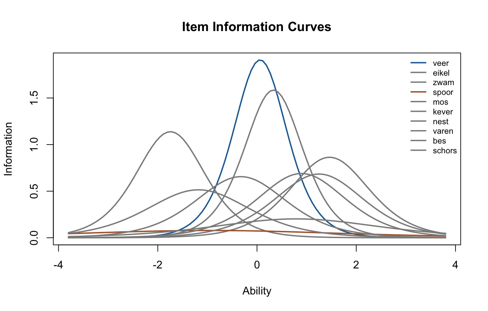
Figuur 15: De informatie per item onder het 2PL-model: tien bergen van verschillende hoogte. De blauwe berg van veer is de hoogste (1.91) en de smalste; de grijze berg direct rechts ervan, de op een na hoogste, is die van kever. De oranje lijn van spoor ligt bijna plat op de as. Let op de staande as: die loopt hier tot bijna 2, en bij het 1PL-model tot 0.55.
plot(fit_2pl, type ="IIC", items =0, lwd =2)
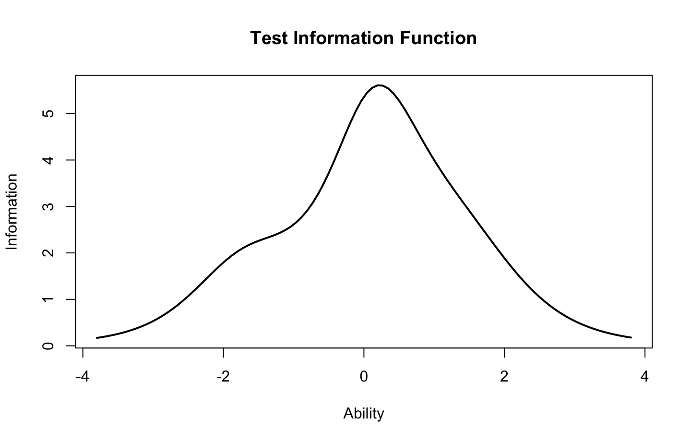
Figuur 16: De testinformatie onder het 2PL-model: een berg met een hogere en spitsere top (5.61) dan onder het 1PL-model (3.74), rond θ = 0.2. Links van de top zit een schouder, rond θ = −1.7: daar staat de berg van eikel.
Leg ze naast de drie van het 1PL-model.
ICC. De curven zijn verschillend steil, en dus kruisen ze: van de 45 paren snijden er 29 elkaar ergens tussen en . De oranje curve van spoor gaat dwars door de andere heen. Herken je de kruisende lijnen uit de klassieke plot? Dit is dezelfde boodschap, nu als model.
IIC. De bergen zijn niet meer even hoog. veer heeft de hoogste en smalste top, spoor ligt bijna plat.
Testinformatie. De top ligt bij en is hoger dan onder 1PL ( tegen ): de steile items rond het midden stapelen op elkaar.
Eén vraag die je bij een 2PL-model altijd zelf moet kunnen uitrekenen: welk item levert de meeste informatie bij een bepaalde vaardigheid? Neem . Eerst de kans, dan de informatie:
a <-coef(fit_2pl)[, "Dscrmn"] # de tien α'sb <-coef(fit_2pl)[, "Dffclt"] # de tien β'stheta <-1P1 <-exp(a * (theta - b)) / (1+exp(a * (theta - b))) # eerst de kansround(sort(a^2* P1 * (1- P1), decreasing =TRUE), 3) # dan de informatie
De winnaar is kever. Niet het steilste item: veer ligt met zijn β van te ver onder de . Een dier met heeft hem vrijwel zeker goed (), dus zijn antwoord vertelt je weinig nieuws. kever is ook steil en ligt dichterbij. Informatie vraagt om allebei: een hoge α én een β in de buurt.
Welk model past? Vergelijken met anova()
Twee modellen, van zuinig naar ruim: 1PL met één α voor alle items, en 2PL met tien. Het ruimere model past minstens zo goed, want het heeft meer knoppen om aan te draaien. “Is het ook significant beter? Dat is de vraag.”
De modellen zijn genest: het kleine model is het grote model met knoppen vastgezet — hier: alle tien de α’s aan elkaar gelijk. Zulke modellen mag je tegen elkaar toetsen. In thema 5 deed je dat ook; wat je ervoor nodig hebt, staat hier opnieuw.
Een Rasch-model hoef je daarvoor niet apart te schatten. Het is hetzelfde model als 1PL, alleen op een andere lat, en het past dus precies even goed: Rasch tegen 2PL is dezelfde toets als 1PL tegen 2PL.
Het kleinste model staat vooraan. In de tabel die je krijgt lees je drie dingen. LRT is de toetsgrootheid van de likelihood-ratiotoets, een , met in p.value de p-waarde van die toets. df is het aantal knoppen dat het ruime model extra heeft. En bij AIC en BIC geldt: lager is beter. Die twee wegen hoe goed het model past af tegen het aantal knoppen; BIC straft een extra knop het zwaarst.
anova(fit_1pl, fit_2pl) # heeft elk item een eigen α nodig?
1PL tegen 2PL. , p < .001. Het 2PL-model heeft tien α’s waar 1PL er één heeft, dus negen knoppen meer, en die leveren een significant betere fit. AIC ( tegen ) en BIC ( tegen ) zijn allebei lager voor 2PL. De tien items van de uil zijn dus niet even steil.
Zo schrijf je dat op:
Zo rapporteer je het
Op de tien items van de Bos-Kennistoets (N = 300) werden twee IRT-modellen geschat. Onder het 1PL-model was de gedeelde discriminatie α = 1.49. Het 2PL-model paste significant beter dan het 1PL-model, , p < .001, met een lagere AIC (3004.34 tegen 3047.57) en BIC (3078.42 tegen 3088.31). In het 2PL-model liep de discriminatie van α = 0.56 (spoor) tot α = 2.76 (veer).
OpmerkingIn getallen: Rasch en 1PL zijn hetzelfde model
Dit kader laat in getallen zien wat bij de drie tekeningen stond: Rasch en 1PL zijn hetzelfde model, op een andere lat. Het pakket dat daarvoor nodig is, mirt, staat niet in je werkboek; je hoeft het niet te kunnen gebruiken. mirt schrijft het Rasch-model op zoals je handboek: α op , en de variantie van θ vrij.
fit_mirt <- mirt::mirt(kennis, 1, itemtype ="Rasch", verbose =FALSE)mirt::extract.mirt(fit_mirt, "logLik") # hoe goed past Rasch in mirt?
[1] -1512.781
logLik(fit_1pl) # en 1PL in ltm? (df = aantal geschatte getallen)
sqrt(mirt::coef(fit_mirt, simplify =TRUE)$cov) # de standaarddeviatie van θ in mirt
F1
F1 1.486998
-mirt::coef(fit_mirt, simplify =TRUE)$items["eikel", "d"] # de moeilijkheid van eikel in mirt
[1] -3.085572
Twee keer dezelfde log-likelihood: en . De twee modellen passen dus precies even goed; het zijn dezelfde curven. Ze schatten ook allebei elf getallen, : tien β’s, en daarbij de gedeelde α (ltm) of de variantie van θ (mirt). En kijk naar de standaarddeviatie van θ: in mirt is die . Dat is de gedeelde α van ltm. Wat ltm als steilheid opschrijft, schrijft mirt op als spreiding. De lat is keer zo ver uitgerekt, en op die uitgerekte lat is elke moeilijkheid ook keer zo groot. Neem eikel, met zijn Dffclt uit coef(fit_1pl): , en het laatste getal in de uitvoer zegt dat mirt op uitkomt.
Kijk je in de uitvoer naar de derde decimaal, dan verschillen de getallen soms een fractie: tegen , en tegen . Dat komt niet doordat het andere modellen zijn, maar doordat elk programma op zijn eigen manier benaderend rekent: allebei zoeken ze stapje voor stapje naar het beste antwoord, en ze stoppen net op een iets andere plek.
Wat je hiervan onthoudt. Rasch en 1PL zijn hetzelfde model: dezelfde curven, dezelfde fit, evenveel geschatte getallen. Wat 1PL als steilheid opschrijft, schrijft Rasch op als spreiding van de dieren.
En de dieren zelf? Drie is drie — of niet
Tot nu toe schatte je alleen wat bij de items hoort. Maar het hoofdstuk begon bij twee dieren. De vos en de egel hadden allebei drie van de vijf goed, en de bunzing vond dat genoeg: drie is drie. Had hij gelijk?
Dat kun je R nu vragen. Neem uit de grote toets de vijf items van de proeftoets, schat de twee modellen, en laat factor.scores() de vaardigheid schatten die bij een scorepatroon hoort. Die functie staat niet in je werkboek; je hoeft hem niet zelf te kunnen draaien. Het gaat hier om wat eruit komt.
In de uitvoer lees je vier kolommen: z1 is de geschatte θ, se.z1 de standaardfout daarvan, Obs hoe vaak het patroon bij de driehonderd dieren voorkwam, en Exp hoe vaak het model dat verwachtte. Op je collegesheets staat een geschatte θ als : thèta met een dakje, en het dakje betekent geschat. Empirical Bayes is de naam van de rekenmethode; die hoef je niet te kennen.
Onder het 1PL-model krijgen de vos en de egel precies dezelfde θ: . Daar heeft de bunzing gelijk. Zijn alle items even steil, dan telt alleen hoeveel je goed hebt, en is de somscore van thema 1 alles wat er te weten valt. Dat heeft een naam: in het Rasch-model — en dus ook in 1PL — is de somscore een voldoende statistieksufficient statistic voor θ. Hij bevat alle informatie die de antwoorden over θ hebben. Past het Rasch-model goed in een grote, representatieve steekproef, dan kun je in de praktijk dus gewoon de somscore gebruiken, zonder IRT-software.
Onder het 2PL-model niet meer. De vos staat op , de egel op . De egel miste spoor, en dat is in dit model van vijf items het flauwste item (): missen zegt daar weinig. Maar hij had mos goed, en mos is hier bijna drie keer zo steil (): dat zegt meer. Wélke drie je goed hebt, doet er nu toe. En het 2PL-model is ook op deze vijf items het model dat beter past, , p < .001. Daar heeft de uil een punt: even veel goed is niet hetzelfde als even vaardig.
Lees er wel de kolom se.z1 bij. Dat is de standaardfout van elke schatting, en die is voor allebei ruim een half. Het is de standaardmeetfout van thema 2, maar dan per dier: hij hangt af van hoeveel informatie de vijf items geven op de plek waar dat dier staat. Meer informatie, kleinere standaardfout. Het verschil tussen de egel en de vos is : kleiner dan één standaardfout. Met vijf items kun je twee dieren die zo dicht bij elkaar staan niet met zekerheid uit elkaar houden. Het 2PL-model laat zien welke kant het op wijst, niet dat de egel bewezen vaardiger is. De uil zei het zelf al: een gevoel is iets anders dan weten.
Hier weet je bovendien iets wat je in het echt nooit weet. De vos is gemaakt met , de egel met . De egel wás iets vaardiger: een tiende punt. De schatting wijst dus de goede kant op; hoe groot het verschil is, kunnen vijf items niet zeggen.
Kijk ook even naar Obs en Exp. Het patroon van de egel kwam 11 keer voor. Het 1PL-model verwachtte er , het 2PL-model . Het rare patroon is in het echt dus helemaal niet zo zeldzaam — en het model met de flauwe spoor had dat zien aankomen.
Wat er achter de bast zat
In de eerste helft kreeg je de moeilijkheden en steilheden van vijf items cadeau, onder het mom van stel dat. Dat waren geen willekeurige getallen. Het zijn de getallen waarmee deze data gemaakt zijn. Leg ze naast wat ltm uit de driehonderd dieren haalde:
Ontwerp en schatting per item
item
β
α
gemaakt
geschat
gemaakt
geschat
veer
0.00
0.06
3.00
2.76
eikel
−1.50
−1.74
2.00
2.13
zwam
1.50
1.46
2.00
1.86
spoor
−0.75
−0.96
0.60
0.56
mos
0.75
0.90
2.00
1.66
kever
0.30
0.33
2.40
2.52
nest
−1.00
−1.18
1.60
1.43
varen
1.20
1.25
1.70
1.65
bes
−0.40
−0.33
1.30
1.62
schors
0.90
0.79
1.00
0.90
Note. β = moeilijkheid, α = steilheid. Geschat onder 2PL, met ltm().
Niet precies gelijk, wel dichtbij: de β’s zitten er bij geen enkel item meer dan een kwart punt naast (de grootste afwijking is , bij eikel), en spoor komt er als het flauwste item uit en veer als het steilste, zoals ze gemaakt waren. Eén ding klopt niet meer: mos en schors, die maar uit elkaar lagen, hebben van plek gewisseld. Dat is wat driehonderd dieren aan toeval meebrengen. Met dertig dieren was het een stuk slordiger geweest, met drieduizend een stuk netter. Een geschatte β is een schatting: twee items die dicht bij elkaar liggen, kun je op grond van één steekproef niet met zekerheid op volgorde zetten.
Eén ding om niet van te schrikken: eikel heeft in dit hoofdstuk vier verschillende moeilijkheden gehad. Gemaakt met ; geschat op onder 2PL, op onder 1PL, en in het kader met mirt op . Dat zijn geen vier meningen over hetzelfde getal. Een β is de plek waar de curve van dát model door gaat, op de lat van dát model. Dwing je een curve flauwer te zijn dan de antwoorden laten zien, dan moet hij bij een makkelijk item verder naar links om er nog bij te passen: dat is het verschil tussen 2PL en 1PL. Rek je de lat uit, dan schuift alles mee: dat is het verschil tussen 1PL en Rasch. Vergelijk β’s dus alleen binnen één model, op één lat.
Zo sluit de cirkel. Je begon met tellen en een gevoel. Daarna deed je alsof je alles wist. En nu heb je uit niets dan enen en nullen teruggevonden wat erin zat.
TipDe vier stappen nog een keer, nu met wat je doet
stap
wat je daar doet
1 · data laden
load(). Kijk met str() of elke itemkolom alleen enen en nullen bevat.
2 · items kiezen
Houd alleen de kolommen met items over. Schrijf dplyr::select() voluit als je dplyr gebruikt.
De naam van het object typen (dat is print()), of summary() of coef() voor β (Dffclt) en α (Dscrmn); plot() met type = "ICC", type = "IIC", en items = 0 voor de testinformatie.
En daarna vergelijk je met anova(klein, groot): is het ruimere model significant beter, en wat zeggen AIC en BIC?
OpmerkingIRT naast wat je al kende
Je kunt van dit thema veel onthouden door het naast de vorige te leggen.
in IRT
lijkt op
waar je dat zag
de moeilijkheid β
de proportie goed, maar dan omgekeerd: hoge p, lage β
de klassieke testtheorie
de discriminatie α
de item-restcorrelatie
de klassieke testtheorie, thema 2
de discriminatie α
de lading van een item op zijn component of factor
thema 4 en 5
de informatie
de betrouwbaarheid, maar dan per plek op de lat in plaats van één getal voor de groep
thema 2
de standaardfout van
de standaardmeetfout, maar dan per dier
thema 2
Rasch of 1PL: de lat vastleggen
de factor een eenheid geven: marker of std.lv = TRUE
thema 5
Met de factoranalyse van thema 5 deelt IRT ook het doel: allebei doen ze alsof er iets latents ín het dier zit dat zijn antwoorden veroorzaakt, en allebei schatten ze hoe sterk elk item daaraan hangt. Twee verschillen: de factoranalyse van thema 5 rekende met items op een schaal van meerdere punten en mocht meerdere factoren hebben; de IRT-modellen van dit thema rekenen met goed-of-fout en met één vaardigheid.
BelangrijkWaar deze techniek zwak staat
Hij vraagt veel dieren. Het 2PL-model schat hier twintig getallen uit driehonderd dieren, en dat ging goed. Op de twintig dieren van de proeftoets was het niet gegaan: daar is zelfs een proportie al grof. Hoe meer parameters per item, hoe meer dieren je nodig hebt.
Hij neemt aan dat er één vaardigheid is. Alle tien de items moeten hetzelfde meten. Meet de helft boskennis en de andere helft leesvaardigheid, dan past er geen enkele lat onder. Of je items één ding meten, is de vraag van thema 4 en 5, en die hoor je te stellen vóór je hieraan begint.
En een model dat past, is nog geen waarheid. Je hebt gezien dat het 2PL-model beter past dan het 1PL-model. Dat zegt dat tien verschillende steilheden de antwoorden beter beschrijven dan één. Het zegt niet waaróm spoor flauw is. Daar heb je de vraag zelf voor nodig, en iemand die naar de pootafdruk kijkt.
Wat je ermee doet: toepassingen
Een toets bouwen voor een doel
Informatie is niet alleen een plaatje om naar te kijken. Je collegesheets noemen vijf dingen die je met IRT doet.
Een toets bouwen voor een doel. Wat een goede toets is, hangt af van waarvoor je hem gebruikt: zijn testdoel. Wil de uil de vaardigste dieren uitkiezen, dan heeft hij items nodig die veel informatie geven bij een hoge θ; wat de toets over zwakke dieren zegt, doet er dan niet toe. Wil hij iedereen zo precies mogelijk meten, dan heeft hij items nodig die samen de hele lat bedekken. En een item met een lage α, zoals spoor? Dan kijk je naar de vraag zelf: is hij onhandig geformuleerd, of meet hij voor een deel iets anders? In opgave E5 kies je zelf drie items, voor elk van de twee doelen.
Twee toetsen op één lat: equivaleren. Stel dat de uil spoor en twee andere items vervangt door nieuwe, en de nieuwe toets bij een nieuwe groep dieren afneemt. Met de klassieke testtheorie kun je de somscores van de oude en de nieuwe toets niet vergelijken: ze meten elk een andere ware score. Met IRT kan het wél, zolang er items in beide toetsen zitten. Van die overlappende items zet je α en β in de nieuwe groep vast op de waarden uit de oude. Daarmee ligt de lat vast, en staan dieren en items uit beide groepen op dezelfde lat. Je collegesheets noemen ook dit de schaal van θ identificeren.
Een toets op maat: CAT. Bij computergestuurd adaptief testen computerized adaptive testing, kortweg CAT, krijgt elk dier zijn eigen toets. De computer gaat steeds hetzelfde rondje:
Kies het item dat bij de huidige de meeste informatie geeft. Bij de start is dat .
Het dier antwoordt.
Schat opnieuw, met de standaardfout erbij.
Weet je genoeg? Dan stop je. Zo niet, dan terug naar 1.
Wanneer het genoeg is, hangt af van het testdoel: zodra de standaardfout klein genoeg is, of zodra vaststaat dat het dier boven of onder een bepaalde θ zit. Bij de Bos-Kennistoets zou een CAT beginnen met veer: onder het 2PL-model geeft dat item bij de meeste informatie. Het is het “zet een leerling op zijn juiste plek” van het begin van de informatie, maar dan item voor item.
Werkt een item voor iedereen hetzelfde? Werkt een item voor de ene groep anders dan voor een andere groep die even vaardig is, dan heet dat item bias, of differential item functioning (DIF). Dat is thema 7.
Past dit dier in het model? Hoe goed het patroon van één dier bij het model past, heet person fit. Dat rekende je met de hand uit bij de egel, en je doet het opnieuw in opgave T5.
Oefeningen
Pen-en-papier eerst, dan R
T1 — Tellen en sorteren
OpmerkingVraag T1 — Pen-en-papier
Acht dieren maakten een toetsje van vier items. Een is goed, een is fout.
Antwoorden per dier en item
dier
blad
hol
tak
web
lijster
1
1
0
1
hommel
0
1
0
0
hert
1
1
0
0
spitsmuis
0
0
0
0
gaai
1
1
1
1
adder
0
1
0
1
hermelijn
1
1
0
0
vleermuis
1
1
0
1
a) Bereken per item de proportie goed.
b) Zet de items op volgorde van makkelijk naar moeilijk.
c) Schrijf van elk dier het scorepatroon op, met de items in de volgorde van b). Welke dieren hebben een trappatroon, en welke niet?
d) Hoeveel verschillende scorepatronen zijn er bij vier items mogelijk? En hoeveel daarvan zijn een trap?
OpgeletAntwoord — open na je eigen poging
a)blad: 5 van de 8, dus ; hol: 7 van de 8, dus ; tak: 1 van de 8, dus ; web: 4 van de 8, dus .
b)hol, blad, web, tak. Het item met de hoogste proportie goed is het makkelijkst.
c) In de volgorde hol–blad–web–tak:
Het scorepatroon van elk dier
dier
scorepatroon
een trap?
lijster
ja
hommel
ja
hert
ja
spitsmuis
ja
gaai
ja
adder
nee
hermelijn
ja
vleermuis
ja
Zeven van de acht hebben een trappatroon. Alleen de adder niet: . Hij heeft blad fout en het moeilijkere web goed.
d) patronen, waarvan een trap: , , , en .
T2 — De regel van Guttman, heen en terug
OpmerkingVraag T2 — Pen-en-papier
Vier items hebben de moeilijkheden , , en . Neem aan dat de regel van Guttman geldt.
a) Een dier heeft . Welk scorepatroon voorspelt de regel?
b) Je ziet het patroon . Tussen welke twee waarden ligt de θ van dat dier?
c) Je ziet het patroon . Kan dat, als de regel van Guttman geldt? Leg uit.
d) Je ziet . Wat weet je over θ, en wat weet je niet?
OpgeletAntwoord — open na je eigen poging
a) . De vaardigheid is minstens en minstens , maar lager dan en .
b) Item 3 goed, dus θ is minstens . Item 4 fout, dus θ is lager dan . De vaardigheid ligt van tot .
c) Nee. Item 1 fout betekent θ lager dan . Item 2 goed betekent θ minstens . Een getal kan niet allebei zijn. Onder Guttman bestaat dit patroon niet; onder een probabilistisch model bestaat het wel, het is alleen onwaarschijnlijk.
d) θ is minstens . Hoeveel meer, weet je niet: net iets erboven of ver erboven geeft hetzelfde patroon. De toets heeft geen item dat moeilijk genoeg is om dit dier te plaatsen.
T3 — De formule invullen
OpmerkingVraag T3 — Pen-en-papier, met rekenmachine
Een dier heeft . Een item heeft .
a) Zonder te rekenen: is de kans op een goed antwoord hoger of lager dan ?
b) Bereken de kans als het item een α van heeft.
c) Bereken de kans als het item een α van heeft. Welke kant schuift hij op, en waarom?
d) Een ander dier, een ander item: , en . Bereken de kans dat dit dier het item fout doet.
OpgeletAntwoord — open na je eigen poging
a) Hoger. De vaardigheid ligt boven de moeilijkheid.
b) Het ding is .
c) Het ding wordt .
Hoger dan bij b). Het dier stond al boven de moeilijkheid; een steilere curve is op die plek al verder geklommen. Een α boven de duwt de kans van de af, de kant op waar hij al was. Een α onder de doet het omgekeerde: die trekt hem naar de toe.
d) Let op de mintekens: . Het ding is , dus de kans op goed is . Gevraagd was de kans op fout: .
Check: het dier ligt links van het item op de lat, dus goed moest onder de uitkomen en fout erboven. Klopt.
T4 — Welk model is dit?
OpmerkingVraag T4 — Pen-en-papier
Drie onderzoekers rapporteren de parameters van een toets van vier items. X en Y analyseerden dezelfde antwoorden; Z deed een ander onderzoek.
Moeilijkheid en steilheid per item, per onderzoeker
item
onderzoeker X
onderzoeker Y
onderzoeker Z
β
α
β
α
β
α
1
−1.12
1
−1.4
0.8
−0.9
1.9
2
−0.24
1
−0.3
0.8
0.0
0.7
3
0.32
1
0.4
0.8
0.6
1.2
4
0.88
1
1.1
0.8
1.5
2.4
Onderzoeker X zette de α vooraf vast op en liet R de variantie van θ schatten; die kwam uit op . Y en Z zetten de variantie van θ op en lieten R de α schatten.
a) Welk model heeft elk van de drie gebruikt: Rasch, 1PL of 2PL?
b) Bij welke onderzoeker(s) kunnen de itemkarakteristieke curven elkaar snijden?
c) Een medestudent zegt: “X en Y gebruikten twee verschillende modellen: bij X is gelijk aan , bij Y is hij , en hun ’s verschillen ook.” Wat zeg je? Reken het na: schrijf de uitkomst van Y om naar de manier van X. Welke α krijg je, welke variantie van θ, en welke β voor item 1?
d) Hoeveel getallen moest R schatten bij elk van de drie?
OpgeletAntwoord — open na je eigen poging
a) X: Rasch — de α staat voor elk item vast op , de variantie van θ is geschat. Y: 1PL — de variantie van θ staat vast op , en de α is geschat en voor elk item gelijk. Volgens je collegesheets zijn dat twee manieren om hetzelfde model op te schrijven; schreef je bij X en Y allebei Rasch/1PL, dan heb je het dus ook goed. Z: 2PL — elk item heeft een eigen α.
b) Alleen bij Z. Bij X en Y zijn de curven even steil en lopen ze naast elkaar.
c) Het is hetzelfde model. Bij allebei is α voor elk item gelijk; ze hebben alleen de lat op een andere manier vastgelegd. Schrijf je de uitkomst van Y op de manier van X, dan wordt de α , en wordt de lat keer zo lang: korter dus, want de curven van Y waren flauwer dan bij . De standaarddeviatie van θ wordt dan , dus de variantie : precies wat X meldt. En elke β wordt keer zo groot: voor item 1 is dat , en ook dat staat bij X in de tabel. De β’s verschillen dus niet omdat het model verschilt, maar omdat de lat verschilt.
d) X: (vier β’s en de variantie van θ). Y: (vier β’s en één gedeelde α). Z: (vier β’s en vier α’s). X en Y schatten er evenveel, en dat past bij een en hetzelfde model.
T5 — Het waarschijnlijkste patroon, en wie er het best in past
OpmerkingVraag T5 — Pen-en-papier, met rekenmachine
Drie items volgen het Rasch-model, met , en . Een dier heeft .
a) Bereken voor elk van de drie items de kans op goed.
b) Wat is het meest waarschijnlijke scorepatroon van dit dier, en hoe groot is de kans daarop?
c) Twee dieren hebben allebei deze θ. De lijster heeft : item 1 fout, de andere twee goed. De gaai heeft : item 2 fout, de andere twee goed. Allebei twee goed. Wiens patroon past het best bij het model? Reken het uit.
OpgeletAntwoord — open na je eigen poging
a) , , . Check: het dier zit boven item 1 en onder de andere twee, dus alleen komt boven de uit.
b) Per item kies je de waarschijnlijkste uitkomst: item 1 goed, item 2 fout, item 3 fout. Dat is , met kans
c) De lijster: .
De gaai: .
Het patroon van de gaai is ruim vier keer zo waarschijnlijk: hij past beter. Dat klopt met je gevoel. De lijster mist het makkelijkste item en heeft de twee moeilijkere goed; de gaai mist het middelste. Hoe goed iemands patroon bij het model past, heet in je werkboek person fit.
T6 — Informatie uitrekenen
OpmerkingVraag T6 — Pen-en-papier, met rekenmachine
a) Een item heeft en . Hoeveel informatie levert het bij ? Reken eerst de kans, dan de informatie.
b) Bij welke θ levert dit item de meeste informatie, en hoeveel is dat?
c) Item A heeft en . Item B heeft en . Welk van de twee vertelt je het meest over een dier met ? Voorspel eerst, reken dan.
OpgeletAntwoord — open na je eigen poging
a) Eerst de kans: het ding is , dus .
Dan de informatie: .
b) Bij . Daar is , en de informatie .
c) Item A is veel steiler, dus je zou op A gokken. Maar:
A: , informatie .
B: , informatie .
B wint. Dit dier heeft item A vrijwel zeker goed, dus daar leer je niets van. Item B ligt precies op zijn niveau. Een flauw item op de goede plek vertelt meer dan een steil item op de verkeerde.
T7 — Curven lezen
OpmerkingVraag T7 — Pen-en-papier
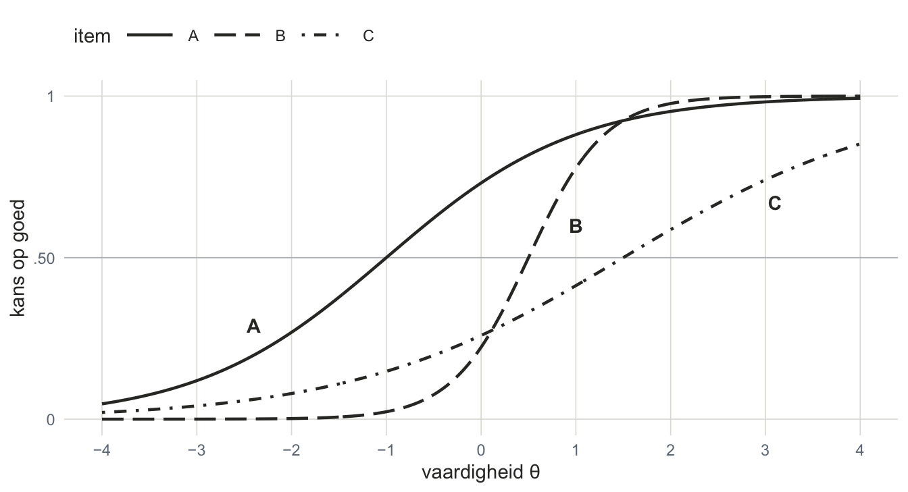
Figuur 17: Drie itemkarakteristieke curven, A, B en C. A is een doorgetrokken lijn, B een lijn van lange strepen, C een streep-stippellijn. Elke curve draagt zijn letter.
a) Welk item heeft de hoogste β? Hoe zie je dat?
b) Welk item heeft de hoogste α? Hoe zie je dat?
c) Is dit Rasch, 1PL of 2PL? Waaraan zie je dat in één oogopslag?
d) Welk item is het makkelijkst voor een dier met ? En voor een dier met ?
OpgeletAntwoord — open na je eigen poging
a) C. Zijn curve gaat het meest naar rechts door de hoogte : je kijkt waar.
b) B. Zijn curve gaat het steilst door de hoogte : je kijkt hoe.
c) 2PL. De curven zijn niet even steil en ze snijden elkaar. Onder Rasch en 1PL kan dat niet.
d) Bij ligt de curve van A het hoogst (). Bij die van B (). A en B wisselen van plek waar hun curven elkaar snijden, bij . Welk item het makkelijkst is, hangt hier dus af van wie je het vraagt.
E1 — De observatietest van de uilen: klassiek
OpmerkingVraag E1 — In R
De uil heeft ook bij zijn eigen soort een toets afgenomen: honderdvijftig uilen, zes items waarbij ze iets moesten waarnemen in het donker. De data staan in data/uil_observatietest.RData; de items heten obs1 tot en met obs6.
a) Laad de data, houd alleen de zes items over, en doe een klassieke analyse met descript().
b) Welk item is het makkelijkst, en welk het moeilijkst?
c) Is er een item dat de betrouwbaarheid schaadt?
d) Maak de plot. Is de volgorde van moeilijkheid op elk niveau dezelfde?
OpgeletAntwoord — open na je eigen poging
ctt_uil$perc en ctt_uil$alpha halen twee blokken uit de lange uitvoer van descript(): de proporties en Cronbach’s alfa. Dat scheelt zoeken.
plot(ctt_uil, type ="b", lty =1, pch =1:6, col ="grey35", includeFirstLast =TRUE)legend("bottomright", legend =colnames(uilen), pch =1:6, lty =1, col ="grey35", bty ="n", cex =0.8)
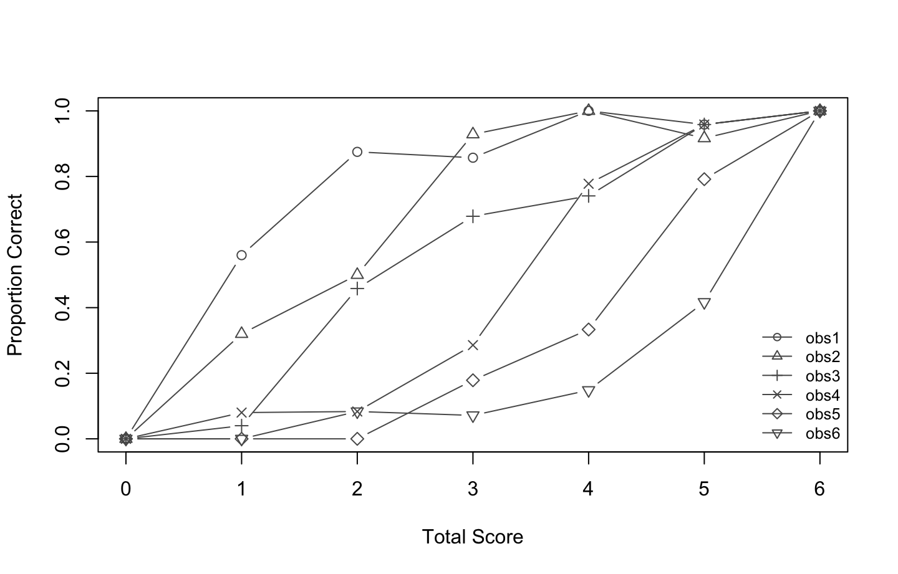
Figuur 18: De proportie goed per item van de observatietest, uitgesplitst naar somscore. Zes lijnen, elk met een eigen teken, die grofweg naast elkaar omhoog lopen, met hier en daar een kruising tussen twee lijnen die dicht bij elkaar liggen.
b) Het makkelijkst is obs1 (), het moeilijkst obs6 ().
c) Nee. Cronbach’s alfa is met alle zes de items, en bij elk item dat je weglaat wordt hij lager; de hoogste waarde zonder één item is . Het scheelt weinig, daarom hier drie decimalen. Dat is anders dan bij de Bos-Kennistoets, waar spoor de betrouwbaarheid drukte.
d) De lijnen lopen grofweg naast elkaar. Van de 15 paren wisselen er 5 ergens tussen somscore en van plaats, en het zijn steeds items die in moeilijkheid vlak bij elkaar liggen. Per somscore zitten er maar twintig tot dertig uilen, dus één uil meer of minder verschuift een lijn al zichtbaar. Er is hier geen lijn die dwars door alle andere heen loopt, zoals die van spoor.
E2 — 1PL en 2PL bij de uilen
OpmerkingVraag E2 — In R
a) Schat het 1PL-model op de zes items. Welk item is het moeilijkst, en hoe groot is de gedeelde α?
b) Schat het 2PL-model. Welk item discrimineert het best, en welk het slechtst?
c) Vergelijk de twee modellen met anova(). Welk model kies je? Betrek de toets, AIC en BIC.
d) Welk item levert onder het 1PL-model de meeste informatie over een uil met ? Beredeneer het zonder de informatie uit te rekenen.
b) Het best discrimineert obs4 (), het slechtst obs6 (). Ze verschillen dus wel, maar lang niet zoveel als veer en spoor bij de Bos-Kennistoets.
c) De toets: , p = .59. Niet significant: de vijf extra α’s maken de fit niet aantoonbaar beter. AIC ( tegen ) en BIC ( tegen ) zijn allebei lager voor 1PL. Alle drie wijzen dezelfde kant op: 1PL is hier genoeg. Het zuinigste model dat niet slechter past, wint.
d) Onder 1PL zijn alle bergen even hoog, dus wint het item waarvan de top het dichtst bij ligt: obs4, met .
e)
Zo rapporteer je het
Op de zes items van de observatietest (N = 150) paste het 2PL-model niet significant beter dan het 1PL-model, , p = .59; ook AIC (964.61 tegen 970.90) en BIC (985.69 tegen 1007.03) gaven de voorkeur aan het 1PL-model, met een gedeelde discriminatie van α = 1.74.
E3 — Is dit nu het Rasch-model?
OpmerkingVraag E3 — In R, met rekenmachine
In E2 koos je bij de uilen het 1PL-model.
a) Een medestudent zegt: “Bij E2 kwam eruit dat constant mag zijn. Dan past het Rasch-model dus.” Klopt dat?
b) Schrijf het 1PL-model uit E2 om naar de manier van je handboek: α op , en de variantie van θ vrij. Hoe groot wordt de variantie van θ? En waar komt de β van obs6 op die lat te liggen? Neem de getallen uit coef(uil_1pl) met vier decimalen.
c) Hoeveel getallen schat het Rasch-model op die manier? En het 1PL-model, en het 2PL-model? Klopt het verschil met de df in de anova()-tabel van E2?
OpgeletAntwoord — open na je eigen poging
a) Ja. Rasch en 1PL zijn hetzelfde model, alleen anders opgeschreven: bij allebei is α voor elk item gelijk. E2 liet zien dat de zes α’s aan elkaar gelijk mogen zijn — 1PL past niet slechter dan 2PL — en daarmee past ook het Rasch-model. Toets je Rasch tegen 2PL, dan is dat precies de toets van E2.
b) In E2 staat de variantie van θ op en is de gedeelde α . Op de manier van je handboek wordt die α , en wordt de lat keer zo lang: langer dus, want de curven waren steiler dan bij . De standaarddeviatie van θ wordt , en de variantie
Elke β wordt ook keer zo groot. Voor obs6:
c) Rasch: zes β’s en de variantie van θ, dus . 1PL: zes β’s en één gedeelde α, ook . 2PL: zes β’s en zes α’s, dus . Het verschil is , en dat is precies de df in de tabel van E2. Wil je het R laten tellen: vraag om de log-likelihood, en lees het getal achter df.
logLik(uil_1pl) # df = het aantal geschatte getallen
'log Lik.' -475.3054 (df=7)
logLik(uil_2pl)
'log Lik.' -473.4507 (df=12)
E4 — Laat een dier de toets duizend keer maken
OpmerkingVraag E4 — In R
Neem de vijf items van de proeftoets, met , , , en , en een dier met .
a) Laat dit dier de toets duizend keer maken met voor alle items. Hoe vaak is het patroon een trap?
b) Doe hetzelfde met . Voorspel eerst: meer of minder trappen?
c) Wat zou er gebeuren bij ?
Een patroon is een trap als er nooit een ná een komt. In R: all(diff(x) <= 0).
a) 489 van de duizend. Uitgerekend is de kans ; de simulatie zit daar dichtbij.
b) 905 van de duizend (uitgerekend: ). Meer: steilere curven duwen elke kans naar of , en dan gaat er minder toevallig anders.
c) 1000 van de duizend. Bij een heel hoge α is elke curve een trede, en ben je terug bij Guttman: het antwoord ligt vast. Eén kanttekening: dit dier staat met precies óp de moeilijkheid van het middelste item. Daar blijft zijn kans , hoe steil de curve ook is. Maar of hij dat item nu goed of fout heeft, het patroon blijft een trap — of .
E5 — Een korte toets voor een doel
OpmerkingVraag E5 — In R
De uil wil uit de tien items van de Bos-Kennistoets een korte toets van drie items maken. Hij heeft twee doelen, en voor elk doel maakt hij een eigen toets.
Toets A — selecteren. Hij wil de vaardigste dieren vinden: die met een θ rond .
Toets B — over de hele lat. Hij wil elk dier zo precies mogelijk meten, van zwak tot sterk.
Gebruik het 2PL-model fit_2pl uit de tekst.
a) Kies drie items voor toets A. Reken daarvoor de informatie van elk item uit bij , zoals de tekst dat deed bij (in de derde ronde, bij het 2PL-model).
b) Kies drie items voor toets B: uit elk stuk van de lat het item met de meeste informatie, bij , bij en bij .
c) Tel per toets de informatie van zijn drie items op, bij en bij . Welke van de twee korte toetsen wint waar? Past dat bij zijn doel?
d)spoor zit in geen van beide toetsen. Had je dat zonder te rekenen kunnen voorspellen?
OpgeletAntwoord — open na je eigen poging
Hieronder staat de rekensom uit de tekst in een functie, info_bij(), zodat je hem maar één keer hoeft te typen. Heb je de code uit de tekst drie keer geplakt, met steeds een andere θ? Dat is net zo goed; de uitkomsten zijn dezelfde.
a <-coef(fit_2pl)[, "Dscrmn"] # de tien α'sb <-coef(fit_2pl)[, "Dffclt"] # de tien β'sinfo_bij <-function(theta) { P <-exp(a * (theta - b)) / (1+exp(a * (theta - b))) # eerst de kans a^2* P * (1- P) # dan de informatie}round(sort(info_bij(1.5), decreasing =TRUE), 3) # a) en b): rechts op de lat
a) Bij geven zwam, varen en mos de meeste informatie. Dat is toets A.
b) Links wint eikel, in het midden veer, rechts zwam. Dat is toets B. Het item zwam zit dus in allebei.
c) Tel per toets de drie getallen uit de uitvoer op.
Bij : toets A , toets B . Daar wint A, en ruim.
Bij : toets A , toets B . Daar wint B.
Dat past bij de doelen. Toets A is gebouwd om de sterke dieren uit elkaar te halen, en over zwakke dieren zegt hij bijna niets; dat hoeft ook niet. Toets B haalt nergens zo’n top als A rechts, maar zijn drie items liggen verspreid over de lat, en links is hij veel beter.
d) Ja. spoor is het flauwste item ( in het model van tien items), en een flauw item heeft een lage, platte berg: overal waar de dieren staan, van tot , ligt er wel een steiler item in de buurt dat meer vertelt. Op je collegesheets is dat het moment voor een andere vraag: is het item onhandig geformuleerd, of meet het voor een deel iets anders? De uil weet het antwoord al: de afdruk was half weggeregend.
R-spiekblad — IRT van begin tot eind
# 1. Pakket en data --------------------------------------------------------library(ltm) # laadt MASS mee: schrijf dplyr::select()load("data/bos_dieren_kennistoets.RData")# 2. Alleen de items --------------------------------------------------------kennis <- bos_dieren_kennistoets[, 2:11] # een 1 is goed, een 0 is fout# 3. Klassiek ---------------------------------------------------------------ctt <-descript(kennis)ctt$perc # proportie goed per itemctt$alpha # Cronbach's alfa, en zonder elk itemplot(ctt, type ="b", includeFirstLast =TRUE)# 4. De twee modellen -------------------------------------------------------fit_1pl <-rasch(kennis) # Rasch/1PL: één gedeelde α, var(θ) = 1fit_2pl <-ltm(kennis ~ z1) # 2PL: elk item een eigen α# 5. Uitkomst nalopen -------------------------------------------------------coef(fit_2pl) # Dffclt = β, Dscrmn = αsummary(fit_1pl) # met standaardfoutenplot(fit_2pl, type ="ICC") # itemkarakteristieke curvenplot(fit_2pl, type ="IIC") # informatie per itemplot(fit_2pl, type ="IIC", items =0) # testinformatie# 6. Vergelijken: het kleinste model eerst ----------------------------------anova(fit_1pl, fit_2pl) # heeft elk item een eigen α nodig?# 7. Met de hand, als controle ----------------------------------------------theta <-0.4; beta <-0.75; alpha <-2ding <-exp(alpha * (theta - beta))P <- ding / (1+ ding) # de kans op goedalpha^2* P * (1- P) # de informatie
Wat blijft liggen
Raden. Bij meerkeuzevragen kan een dier dat niets weet het toch goed hebben. Daar is het drie-parametermodel voor, het 3PL-model uit het rijtje van je collegesheets. De curve begint dan niet bij maar bij de gokkans.
Meer dan twee antwoorden. Items op een schaal van vijf punten, zoals in thema 4 en 5, vragen om het graded-responsemodel. Het idee blijft hetzelfde, de curven worden er meer.
Person fit in één getal. Je hebt de kans op een patroon uitgerekend. Er bestaan maten die daar één getal per dier van maken, om afwijkende patronen op te sporen; die rekenen we hier niet uit.
Werkt een item voor iedere groep hetzelfde? Dat is thema 7.
Aan het eind van de dag
De uil vouwde zijn berkenbast dicht. Het werd al licht, en dat was voor hem het einde van de dag.
“En?” vroeg de bunzing. “Was drie nou drie?”
“Als mijn vragen even scherp waren geweest wel.” De uil knipperde. “Dan had je gelijk gehad. Maar één ervan was flauw. Die pootafdruk in de modder.”
“Die had de mol goed.”
“Dat zegt weinig. De egel had hem fout, en dat zegt ook weinig.”
“Dus de egel is slimmer dan de vos.”
“Dat zei ik niet.” De uil schoof de bast onder zijn vleugel. “Met vijf vragen weet ik dat niet. Ik zei dat drie niet altijd drie is. Die afdruk haal ik eruit. Of ik maak een betere.”
De bunzing dacht na. “En als een vraag voor de ene soort makkelijker is dan voor de andere? Niet omdat ze meer weten. Gewoon omdat ze anders zijn.”
De uil keek hem lang aan.
“Dat,” zei hij, “is een vraag voor morgen.”
Verantwoording
Dit oefenboek is geschreven voor studenten die psychometrie leren via R. Het is materiaal van CountCamp en niet van de opleiding: het volgt de weken van de cursus, maar het is er geen officieel onderdeel van. De voorbeelden, datasets, vragen en formuleringen zijn origineel. Alle data in dit thema zijn gemaakt, met een model en een toevalsgenerator; er zitten geen gegevens van echte dieren of mensen in, en geen data of opgaven van de opleiding.
Waar dit thema een eigen weg gaat. De volgorde is die van dit oefenboek: het hoofdstuk begint bij vijf items en twintig dieren, laat je eerst tellen en sorteren, en bouwt de curve pas op als je weet wat een scorepatroon is. De modellen, de formules en de R-functies zijn wél die van de cursus: het pakket ltm, met descript(), rasch() en ltm(), en de vier stappen uit het werkboek. De letters ook: θ voor de vaardigheid, β voor de moeilijkheid, α voor de discriminatie. In de uitvoer van R heten de laatste twee Dffclt en Dscrmn.
Over de namen Rasch en 1PL: dit hoofdstuk volgt de collegesheets van 2026-27. Rasch en 1PL zijn daar hetzelfde model met twee manieren om de schaal van θ vast te leggen: α op met een vrije variantie van θ (zoals het handboek), of de variantie van θ op met een vrije α (zoals ltm). Het werkboek van dit jaar noemt alleen 1PL en 2PL, en gebruikt voor 1PL de functie rasch(). Het beeld van een lat die mag rekken is van dit oefenboek; het idee erachter staat op de sheets, en het is op de data van dit hoofdstuk nagerekend met een tweede pakket. De eerste versie van dit thema stond online vóór de sheets er waren en behandelde Rasch en 1PL als twee verschillende modellen. Sinds 6 oktober 2026 volgt hij de sheets; heb je hem eerder gelezen, lees dan het stuk over de lat opnieuw.
Drie dingen staan in dit hoofdstuk die verder gaan dan het werkboek: het schatten van de vaardigheid van een dier met factor.scores(), het tellen van patronen in een simulatie, en het kiezen van items voor een korte toets in opgave E5. Het eerste omdat het hoofdstuk anders zijn eigen openingsvraag niet beantwoordt; het tweede omdat een kans die je duizend keer hebt zien uitkomen beter blijft hangen dan een kans die je hebt uitgerekend; het derde omdat de toepassingen op de sheets anders alleen woorden blijven.
En waar dit oefenboek en de cursus elkaar tegenspreken, wint de cursus: botst iets hieruit met je college, met het werkboek van de opleiding of met je formuleblad, dan winnen die drie.